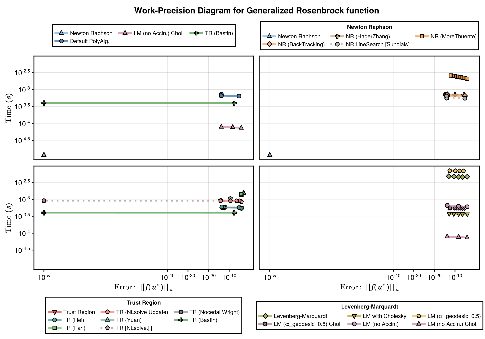
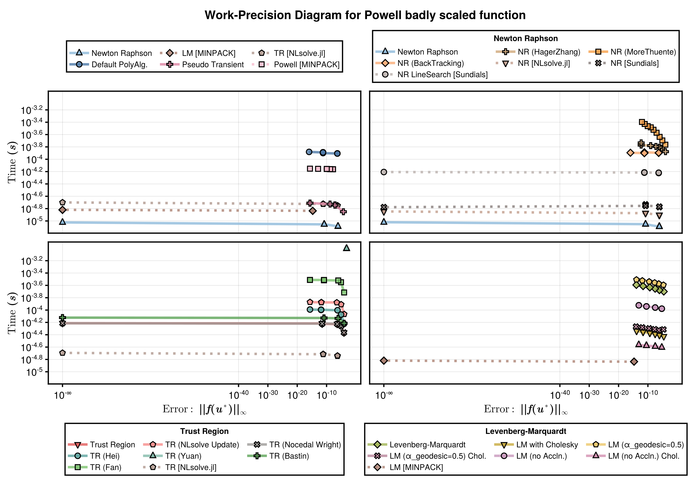
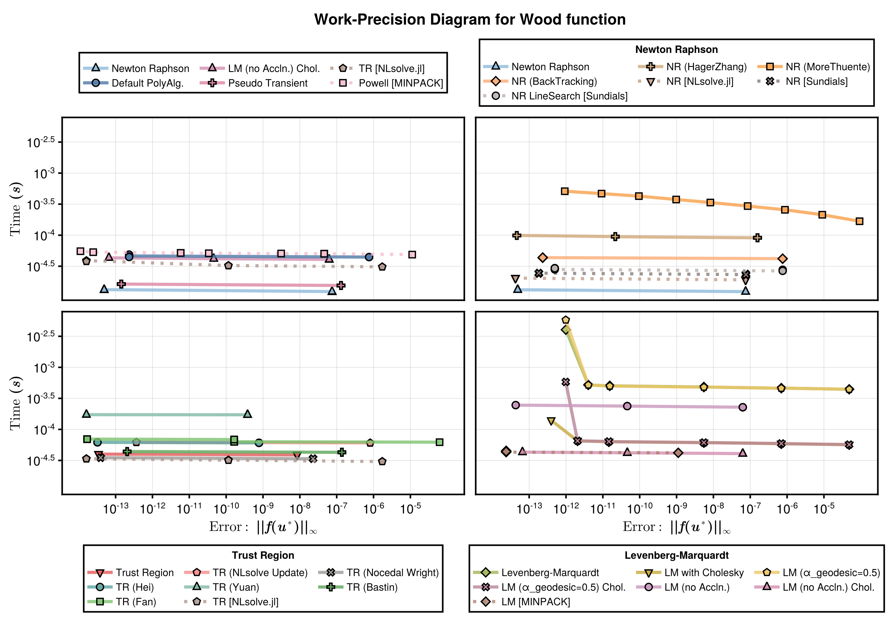
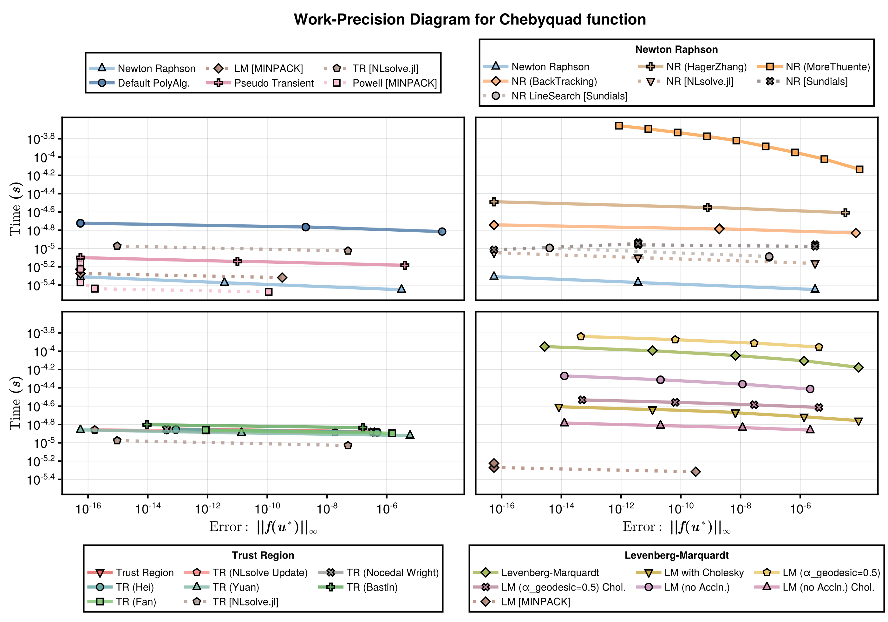
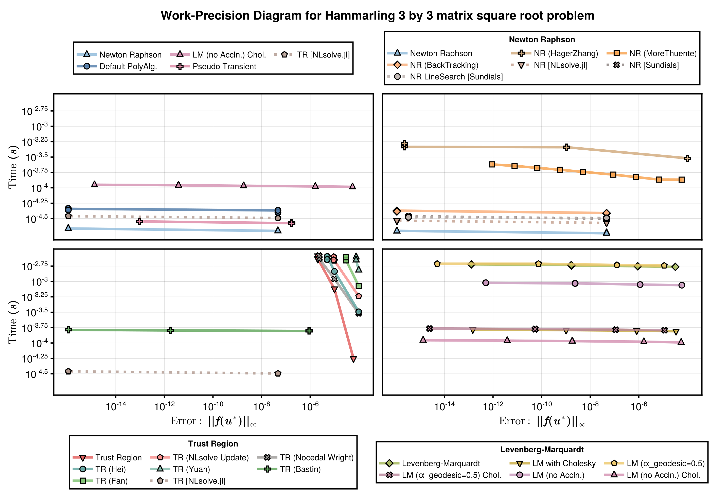
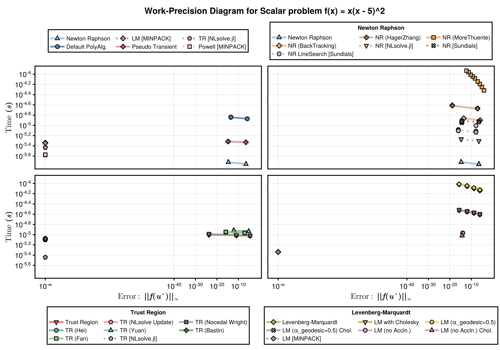
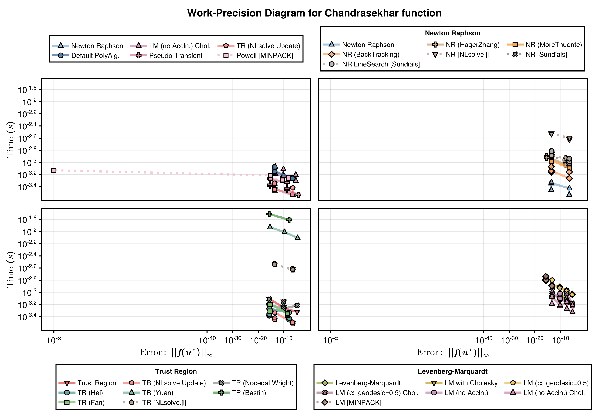
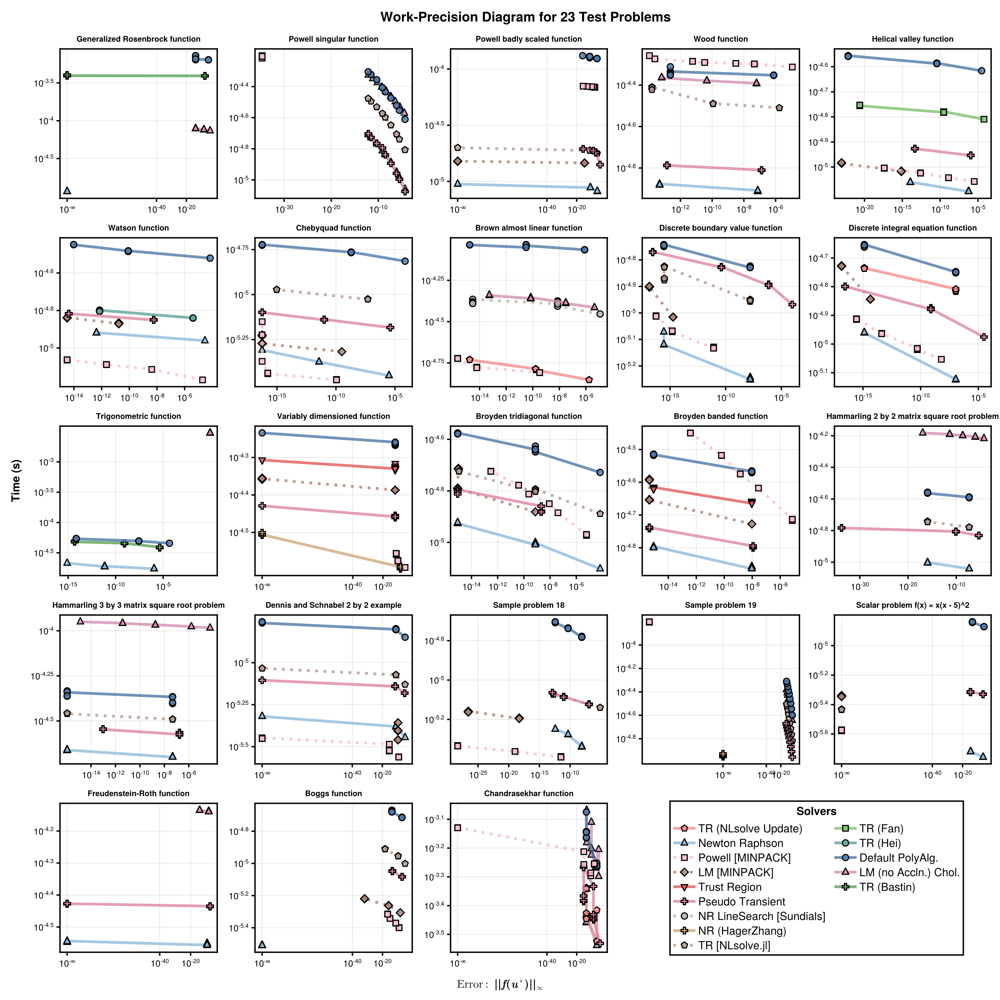

Nonlinear Solver 23 Test Problems
These benchmarks compares the runtime and error for a range of nonlinear solvers. The problems are a standard set of problems as described here. The solvers are implemented in NonlinearProblemLibrary.jl, where you can find the problem function declarations. For each problem we test the following solvers:
- NonlinearSolve.jl's Newton Raphson method (
NewtonRaphson()). - NonlinearSolve.jl's Trust Region method (
TrustRegion()). - NonlinearSolve.jl's Levenberg-Marquardt method (
LevenbergMarquardt()). - MINPACK's Modified Powell method (
CMINPACK(method=:hybr)). - MINPACK's Levenberg-Marquardt method (
CMINPACK(method=:lm)). - NLsolveJL's Newton Raphson (
NLsolveJL(method=:newton)). - NLsolveJL's Trust Region (
NLsolveJL()). - NLsolveJL's Anderson acceleration (
NLsolveJL(method=:anderson)). - Sundials's Newton-Krylov method (
KINSOL()).
Furthermore, for NonlinearSolve.jl's Newton Raphson method we try the following Line Search options (in addition to the default):
HagerZhangMoreThuenteBackTracking
and for NonlinearSolve.jl's Trust Region we try the following Radius Update schemes (in addition to the default):
NLsolveNocedalWrightHeiYuanBastinFan
and finally for NonlinearSolve.jl's Levenberg-Marquardt method why try using both the default α_geodesic value (0.75) and a modified value (0.5), and also with and without setting the CholeskyFactorization linear solver.
For each benchmarked problem, the second, third, and fourth plots compares the performance of NonlinearSolve's Newton Raphson, Trust Region, and Levenberg-Marquardt methods, respectively. The first plot compares the best methods from each of these categories to the various methods available from other packages. At the end of the benchmarks, we print a summary table of which solvers succeeded for which problems.
Setup
Fetch required packages.
using NonlinearSolve, LinearSolve, StaticArrays, Sundials, Setfield,
BenchmarkTools, LinearAlgebra, DiffEqDevTools, NonlinearProblemLibrary, CairoMakie,
RecursiveFactorization, Enzyme
import PolyesterForwardDiff, MINPACK, NLsolve, LineSearches
const RUS = RadiusUpdateSchemes;Declare the benchmarked solvers (and their names and plotting options).
HagerZhang() = LineSearchesJL(; method = LineSearches.HagerZhang())
MoreThuente() = LineSearchesJL(; method = LineSearches.MoreThuente())
solvers_all = [
(; pkg = :nonlinearsolve, type = :general, name = "Default PolyAlg.", solver = Dict(:alg => FastShortcutNonlinearPolyalg(; u0_len = 10, linsolve = \))),
(; pkg = :nonlinearsolve, type = :NR, name = "Newton Raphson", solver = Dict(:alg => NewtonRaphson(; linsolve = \))),
(; pkg = :nonlinearsolve, type = :NR, name = "NR (HagerZhang)", solver = Dict(:alg => NewtonRaphson(; linsolve = \, linesearch = HagerZhang()))),
(; pkg = :nonlinearsolve, type = :NR, name = "NR (MoreThuente)", solver = Dict(:alg => NewtonRaphson(; linsolve = \, linesearch = MoreThuente()))),
(; pkg = :nonlinearsolve, type = :NR, name = "NR (BackTracking)", solver = Dict(:alg => NewtonRaphson(; linsolve = \, linesearch = BackTracking()))),
(; pkg = :nonlinearsolve, type = :TR, name = "Trust Region", solver = Dict(:alg => TrustRegion(; linsolve = \))),
(; pkg = :nonlinearsolve, type = :TR, name = "TR (NLsolve Update)", solver = Dict(:alg => TrustRegion(; linsolve = \, radius_update_scheme = RUS.NLsolve))),
(; pkg = :nonlinearsolve, type = :TR, name = "TR (Nocedal Wright)", solver = Dict(:alg => TrustRegion(; linsolve = \, radius_update_scheme = RUS.NocedalWright))),
(; pkg = :nonlinearsolve, type = :TR, name = "TR (Hei)", solver = Dict(:alg => TrustRegion(; linsolve = \, radius_update_scheme = RUS.Hei))),
(; pkg = :nonlinearsolve, type = :TR, name = "TR (Yuan)", solver = Dict(:alg => TrustRegion(; linsolve = \, radius_update_scheme = RUS.Yuan))),
(; pkg = :nonlinearsolve, type = :TR, name = "TR (Bastin)", solver = Dict(:alg => TrustRegion(; linsolve = \, radius_update_scheme = RUS.Bastin))),
(; pkg = :nonlinearsolve, type = :TR, name = "TR (Fan)", solver = Dict(:alg => TrustRegion(; linsolve = \, radius_update_scheme = RUS.Fan))),
(; pkg = :nonlinearsolve, type = :LM, name = "Levenberg-Marquardt", solver = Dict(:alg => LevenbergMarquardt(; linsolve = QRFactorization()))),
(; pkg = :nonlinearsolve, type = :LM, name = "LM with Cholesky", solver = Dict(:alg => LevenbergMarquardt(; linsolve = CholeskyFactorization()))),
(; pkg = :nonlinearsolve, type = :LM, name = "LM (α_geodesic=0.5)", solver = Dict(:alg => LevenbergMarquardt(; linsolve = QRFactorization(), α_geodesic=0.5))),
(; pkg = :nonlinearsolve, type = :LM, name = "LM (α_geodesic=0.5) Chol.", solver = Dict(:alg => LevenbergMarquardt(; linsolve = CholeskyFactorization(), α_geodesic=0.5))),
(; pkg = :nonlinearsolve, type = :LM, name = "LM (no Accln.)", solver = Dict(:alg => LevenbergMarquardt(; linsolve = QRFactorization(), disable_geodesic = Val(true)))),
(; pkg = :nonlinearsolve, type = :LM, name = "LM (no Accln.) Chol.", solver = Dict(:alg => LevenbergMarquardt(; linsolve = CholeskyFactorization(), disable_geodesic = Val(true)))),
(; pkg = :nonlinearsolve, type = :general, name = "Pseudo Transient", solver = Dict(:alg => PseudoTransient(; linsolve = \, alpha_initial=10.0))),
(; pkg = :wrapper, type = :general, name = "Powell [MINPACK]", solver = Dict(:alg => CMINPACK(; method=:hybr))),
(; pkg = :wrapper, type = :LM, name = "LM [MINPACK]", solver = Dict(:alg => CMINPACK(; method=:lm))),
(; pkg = :wrapper, type = :NR, name = "NR [NLsolve.jl]", solver = Dict(:alg => NLsolveJL(; method=:newton))),
(; pkg = :wrapper, type = :TR, name = "TR [NLsolve.jl]", solver = Dict(:alg => NLsolveJL())),
(; pkg = :wrapper, type = :NR, name = "NR [Sundials]", solver = Dict(:alg => KINSOL(; linear_solver = :LapackDense, maxsetupcalls=1))),
(; pkg = :wrapper, type = :NR, name = "NR LineSearch [Sundials]", solver = Dict(:alg => KINSOL(; linear_solver = :LapackDense, globalization_strategy=:LineSearch, maxsetupcalls=1)))
];
solver_tracker = [];
wp_general_tracker = [];Sets tolerances.
abstols = 1.0 ./ 10.0 .^ (4:12)
reltols = 1.0 ./ 10.0 .^ (4:12);Prepares various helper functions for benchmarking a specific problem.
function set_ad_chunksize(solvers, u0)
ck = NonlinearSolve.pickchunksize(u0)
for i in eachindex(solvers)
@set! solvers[i].solver[:alg] = __set_ad_chunksize(solvers[i].solver[:alg], ck, length(u0))
end
return solvers
end
function __set_ad_chunksize(solver::GeneralizedFirstOrderAlgorithm, ck, N)
if N > ck
ad = AutoPolyesterForwardDiff(; chunksize = ck)
else
ad = AutoForwardDiff(; chunksize = ck)
end
return GeneralizedFirstOrderAlgorithm(; solver.descent, solver.linesearch,
solver.trustregion, jvp_autodiff = ad, solver.max_shrink_times, solver.vjp_autodiff,
concrete_jac = solver.concrete_jac, name = solver.name, autodiff = ad)
end
function __set_ad_chunksize(solver::NonlinearSolvePolyAlgorithm, ck, N)
algs = [__set_ad_chunksize(alg, ck, N) for alg in solver.algs]
return NonlinearSolvePolyAlgorithm(algs; solver.start_index)
end
__set_ad_chunksize(solver, ck, N) = solver
# Benchmarks a specific problem, checks which solvers can solve it and their performance
function benchmark_problem!(prob_name; solver_tracker=solver_tracker)
# Finds the problem and the true solution.
prob = nlprob_23_testcases[prob_name]
# Finds the solvers that can solve the problem
solvers_concrete = set_ad_chunksize(solvers_all, prob.prob.u0);
successful_solvers = filter(solver -> check_solver(prob, solver), solvers_concrete);
push!(solver_tracker, prob_name => successful_solvers);
# Handles the non-general cases.
solvers_NR = filter(s -> s.type==:NR, successful_solvers)
solvers_TR = filter(s -> s.type==:TR, successful_solvers)
solvers_LM = filter(s -> s.type==:LM, successful_solvers)
wp_NR = WorkPrecisionSet(prob.prob, abstols, reltols, getfield.(solvers_NR, :solver);
names=getfield.(solvers_NR, :name), numruns=100, error_estimate=:l∞,
maxiters=1000,
termination_condition = AbsNormTerminationMode(Base.Fix1(maximum, abs)))
wp_TR = WorkPrecisionSet(prob.prob, abstols, reltols, getfield.(solvers_TR, :solver);
names=getfield.(solvers_TR, :name), numruns=100, error_estimate=:l∞,
maxiters=1000,
termination_condition = AbsNormTerminationMode(Base.Fix1(maximum, abs)))
wp_LM = WorkPrecisionSet(prob.prob, abstols, reltols, getfield.(solvers_LM, :solver);
names=getfield.(solvers_LM, :name), numruns=100, error_estimate=:l∞,
maxiters=1000,
termination_condition = AbsNormTerminationMode(Base.Fix1(maximum, abs)))
# Handles the general case
solvers_general = filter(s -> s.type==:general, successful_solvers)
add_solver!(solvers_general, nothing, solvers_TR, wp_TR)
add_solver!(solvers_general, nothing, solvers_LM, wp_LM)
add_solver!(solvers_general, nothing, solvers_NR, wp_NR)
wp_general = WorkPrecisionSet(prob.prob, abstols, reltols,
getfield.(solvers_general, :solver); names=getfield.(solvers_general, :name),
numruns=100, error_estimate=:l∞, maxiters=1000,
termination_condition = AbsNormTerminationMode(Base.Fix1(maximum, abs)))
push!(wp_general_tracker, prob_name => wp_general)
fig = plot_collective_benchmark(prob_name, wp_general, wp_NR, wp_TR, wp_LM)
save(replace(lowercase(prob_name), " " => "_") * "_wpd.svg", fig)
return fig
end
# Checks if a solver can successfully solve a given problem.
function check_solver(prob, solver)
try
sol = solve(prob.prob, solver.solver[:alg]; abstol=1e-8, reltol=1e-8,
maxiters=1000000,
termination_condition=AbsNormTerminationMode(Base.Fix1(maximum, abs)))
if norm(sol.resid, Inf) < 1e-6
Base.printstyled("[Info] Solver $(solver.name) returned retcode $(sol.retcode) \
with an residual norm = $(norm(sol.resid, Inf)).\n"; color=:green)
return true
else
Base.printstyled("[Warn] Solver $(solver.name) had a very large residual \
(norm = $(norm(sol.resid, Inf))).\n"; color=:red)
return false
end
WorkPrecisionSet(prob.prob, [1e-4, 1e-12], [1e-4, 1e-12], [solver.solver];
names=[solver.name], numruns=5, error_estimate=:l∞, maxiters=1000)
catch e
Base.printstyled("[Warn] Solver $(solver.name) threw an error: $e.\n"; color=:red)
return false
end
return true
end
# Adds an additional, selected, solver to the general solver set.
function add_solver!(solvers_general, selected_solver_name, additional_solver_set, wp)
if isnothing(selected_solver_name)
isempty(wp.wps) && return
selected_idx = argmin(median.(getfield.(wp.wps, :times)))
else
selected_idx = findfirst(s -> s.name==selected_solver_name, additional_solver_set)
isnothing(selected_solver) && error("The $(selected_solver_name) was designated to \
be added to the general solver set, however, it seemed to fail on this \
problem.")
end
isnothing(selected_idx) ||
pushfirst!(solvers_general, additional_solver_set[selected_idx])
end;Plotting related helper functions.
__log10_zero(x) = ifelse(iszero(x), -100, log10(x))
Makie.inverse_transform(::typeof(__log10_zero)) = exp10
Makie.defaultlimits(::typeof(__log10_zero)) = Makie.defaultlimits(log10)
Makie.defined_interval(::typeof(__log10_zero)) = 0.0..Inf
# Skip minor ticks for __log10_zero scale
function Makie.get_minor_tickvalues(i::IntervalsBetween, scale::typeof(__log10_zero),
tickvalues, vmin, vmax)
return []
end
tickformatter(values) = map(values) do v
e = log10(v)
if isinteger(e) && e == -100
return rich("10", superscript("-∞"))
end
sup = isinteger(e) ? Int(e) : round(e; digits=2)
return rich("10", superscript(string(sup)))
end
function __filter_nearzero((ticks, ticklabels))
if first(ticks) ≈ 1e-100
idxs = findall(x -> x ≈ 1e-100 || x ≥ 10^-40, ticks)
return ticks[idxs], ticklabels[idxs]
end
return ticks, ticklabels
end
# Plots a work-precision diagram.
function plot_collective_benchmark(prob_name, wp_general, wp_NR, wp_TR, wp_LM)
LINESTYLES = Dict(:nonlinearsolve => :solid, :simplenonlinearsolve => :dash,
:wrapper => :dot)
ASPECT_RATIO = 0.7
WIDTH = 1400
HEIGHT = round(Int, WIDTH * ASPECT_RATIO)
STROKEWIDTH = 2.5
colors = cgrad(:tableau_20, length(solvers_all); categorical = true)
cycle = Cycle([:marker], covary = true)
plot_theme = Theme(Lines = (; cycle), Scatter = (; cycle))
fig = with_theme(plot_theme) do
fig = Figure(; size = (WIDTH, HEIGHT))
axs = []
xmin, xmax, ymin, ymax = Inf, -Inf, Inf, -Inf
for i in 1:2, j in 1:2
wp = (wp_general, wp_NR, wp_TR, wp_LM)[2 * (i - 1) + j]
ax = Axis(fig[i + 1, j], ylabel = j == 1 ? L"Time $\mathbf{(s)}$" : "",
xlabelsize = 22, ylabelsize = 22,
xlabel = i == 2 ? L"Error: $\mathbf{||f(u^\ast)||_\infty}$" : "",
xscale = __log10_zero, yscale = __log10_zero,
xtickwidth = STROKEWIDTH,
ytickwidth = STROKEWIDTH, spinewidth = STROKEWIDTH,
xticklabelsize = 20, yticklabelsize = 20,
xticklabelsvisible = i == 2, yticklabelsvisible = j == 1,
xticksvisible = i == 2, yticksvisible = j == 1,)
push!(axs, ax)
ls = []
scs = []
for wpᵢ in wp.wps
idx = findfirst(s -> s.name == wpᵢ.name, solvers_all)
errs = getindex.(wpᵢ.errors, :l∞)
times = wpᵢ.times
emin, emax = extrema(errs)
tmin, tmax = extrema(times)
emin < xmin && (xmin = emin)
emax > xmax && (xmax = emax)
tmin < ymin && (ymin = tmin)
tmax > ymax && (ymax = tmax)
l = lines!(ax, errs, times; color = colors[idx], linewidth = 5,
linestyle = LINESTYLES[solvers_all[idx].pkg], alpha = 0.8,
label = wpᵢ.name)
sc = scatter!(ax, errs, times; color = colors[idx], markersize = 16,
strokewidth = 2, marker = Cycled(idx), alpha = 0.8, label = wpᵢ.name)
push!(ls, l)
push!(scs, sc)
end
legend_title = ("", "Newton Raphson", "Trust Region", "Levenberg-Marquardt")[2 * (i - 1) + j]
Legend(fig[ifelse(i == 1, 1, 4), j], [[l, sc] for (l, sc) in zip(ls, scs)],
[wpᵢ.name for wpᵢ in wp.wps], legend_title;
framevisible=true, framewidth = STROKEWIDTH,
nbanks = 3, labelsize = 16, titlesize = 16,
tellheight = true, tellwidth = false, patchsize = (40.0f0, 20.0f0))
end
linkaxes!(axs...)
xmin = max(xmin, 10^-100)
xticks = __filter_nearzero(Makie.get_ticks(LogTicks(WilkinsonTicks(10; k_min = 5)),
__log10_zero, tickformatter, xmin, xmax))
yticks = __filter_nearzero(Makie.get_ticks(LogTicks(WilkinsonTicks(10; k_min = 5)),
__log10_zero, tickformatter, ymin, ymax))
foreach(axs) do ax
ax.xticks = xticks
ax.yticks = yticks
end
fig[0, :] = Label(fig, "Work-Precision Diagram for $(prob_name)",
fontsize = 24, tellwidth = false, font = :bold)
fig
end
return fig
endplot_collective_benchmark (generic function with 1 method)Benchmarks
We here run benchmarks for each of the 23 models.
Problem 1 (Generalized Rosenbrock function)
benchmark_problem!("Generalized Rosenbrock function")[Info] Solver Default PolyAlg. returned retcode Success with an residual no
rm = 1.554312234475219e-14.
[Info] Solver Newton Raphson returned retcode Success with an residual norm
= 0.0.
[Info] Solver NR (HagerZhang) returned retcode Success with an residual nor
m = 1.0214717960366215e-10.
[Info] Solver NR (MoreThuente) returned retcode Success with an residual no
rm = 9.462239880519974e-9.
[Info] Solver NR (BackTracking) returned retcode Success with an residual n
orm = 1.554312234475219e-14.
[Info] Solver Trust Region returned retcode Success with an residual norm =
3.6637359812630166e-13.
[Info] Solver TR (NLsolve Update) returned retcode Success with an residual
norm = 7.771561172376096e-15.
[Info] Solver TR (Nocedal Wright) returned retcode Success with an residual
norm = 3.6637359812630166e-13.
[Info] Solver TR (Hei) returned retcode Success with an residual norm = 2.9
976021664879227e-14.
[Info] Solver TR (Yuan) returned retcode Success with an residual norm = 3.
441691376337985e-14.
[Info] Solver TR (Bastin) returned retcode Success with an residual norm =
0.0.
[Info] Solver TR (Fan) returned retcode Success with an residual norm = 0.0
.
[Info] Solver Levenberg-Marquardt returned retcode Success with an residual
norm = 5.613462694675775e-9.
[Info] Solver LM with Cholesky returned retcode Success with an residual no
rm = 5.613456810493744e-9.
[Info] Solver LM (α_geodesic=0.5) returned retcode Success with an residual
norm = 1.3598844272877386e-10.
[Info] Solver LM (α_geodesic=0.5) Chol. returned retcode Success with an re
sidual norm = 1.359913293086379e-10.
[Info] Solver LM (no Accln.) returned retcode Success with an residual norm
= 5.430651484061855e-9.
[Info] Solver LM (no Accln.) Chol. returned retcode Success with an residua
l norm = 5.4307913721629575e-9.
[Warn] Solver Pseudo Transient had a very large residual (norm = 2.63808362
8039608e10).
[Warn] Solver Powell [MINPACK] had a very large residual (norm = 4.39999999
99999995).
[Warn] Solver LM [MINPACK] had a very large residual (norm = 0.000852391008
632214).
[Warn] Solver NR [NLsolve.jl] had a very large residual (norm = 1.813491901
0169324e72).
[Info] Solver TR [NLsolve.jl] returned retcode Success with an residual nor
m = 4.36956026916846e-10.
[Warn] Solver NR [Sundials] had a very large residual (norm = 3.83838631427
93607e6).
[Info] Solver NR LineSearch [Sundials] returned retcode Success with an res
idual norm = 9.992007221626409e-15.
Problem 2 (Powell singular function)
benchmark_problem!("Powell singular function")[Info] Solver Default PolyAlg. returned retcode Success with an residual no
rm = 2.945100572117028e-9.
[Info] Solver Newton Raphson returned retcode Success with an residual norm
= 2.945100572117028e-9.
[Info] Solver NR (HagerZhang) returned retcode Success with an residual nor
m = 7.351727052878344e-9.
[Info] Solver NR (MoreThuente) returned retcode Success with an residual no
rm = 2.945100572117028e-9.
[Info] Solver NR (BackTracking) returned retcode Success with an residual n
orm = 2.945100572117028e-9.
[Info] Solver Trust Region returned retcode Success with an residual norm =
2.8429847529782356e-9.
[Info] Solver TR (NLsolve Update) returned retcode Success with an residual
norm = 2.945100572117028e-9.
[Info] Solver TR (Nocedal Wright) returned retcode Success with an residual
norm = 2.8429847529782356e-9.
[Info] Solver TR (Hei) returned retcode Success with an residual norm = 2.7
952108150126756e-9.
[Info] Solver TR (Yuan) returned retcode Success with an residual norm = 7.
530945574071419e-9.
[Info] Solver TR (Bastin) returned retcode Success with an residual norm =
4.491468406067117e-9.
[Info] Solver TR (Fan) returned retcode Success with an residual norm = 2.8
551395051697775e-9.
[Info] Solver Levenberg-Marquardt returned retcode Success with an residual
norm = 7.887593900975011e-9.
[Info] Solver LM with Cholesky returned retcode Success with an residual no
rm = 7.887593866725585e-9.
[Info] Solver LM (α_geodesic=0.5) returned retcode Success with an residual
norm = 9.888757034011156e-9.
[Info] Solver LM (α_geodesic=0.5) Chol. returned retcode Success with an re
sidual norm = 9.888757023494699e-9.
[Info] Solver LM (no Accln.) returned retcode Success with an residual norm
= 5.00414635180306e-9.
[Info] Solver LM (no Accln.) Chol. returned retcode Success with an residua
l norm = 5.004146355111214e-9.
[Info] Solver Pseudo Transient returned retcode Success with an residual no
rm = 2.9904543725837263e-9.
[Info] Solver Powell [MINPACK] returned retcode Success with an residual no
rm = 2.112388311092462e-35.
[Info] Solver LM [MINPACK] returned retcode Success with an residual norm =
2.052303855981701e-20.
[Info] Solver NR [NLsolve.jl] returned retcode Success with an residual nor
m = 2.9451005722314578e-9.
[Info] Solver TR [NLsolve.jl] returned retcode Success with an residual nor
m = 2.9451005722314578e-9.
[Info] Solver NR [Sundials] returned retcode Success with an residual norm
= 2.9470866826953975e-9.
[Info] Solver NR LineSearch [Sundials] returned retcode Success with an res
idual norm = 2.9470866826953975e-9.
Problem 3 (Powell badly scaled function)
benchmark_problem!("Powell badly scaled function")[Info] Solver Default PolyAlg. returned retcode Success with an residual no
rm = 6.226019699795415e-12.
[Info] Solver Newton Raphson returned retcode Success with an residual norm
= 1.5733414571172943e-11.
[Info] Solver NR (HagerZhang) returned retcode Success with an residual nor
m = 8.874578849571435e-10.
[Info] Solver NR (MoreThuente) returned retcode Success with an residual no
rm = 8.11542533174503e-9.
[Info] Solver NR (BackTracking) returned retcode Success with an residual n
orm = 6.226019699795415e-12.
[Info] Solver Trust Region returned retcode Success with an residual norm =
3.1642466424841587e-12.
[Info] Solver TR (NLsolve Update) returned retcode Success with an residual
norm = 1.6564527527407336e-12.
[Info] Solver TR (Nocedal Wright) returned retcode Success with an residual
norm = 3.1642466424841587e-12.
[Info] Solver TR (Hei) returned retcode Success with an residual norm = 1.3
68238855548043e-12.
[Info] Solver TR (Yuan) returned retcode Success with an residual norm = 7.
930323064897493e-13.
[Info] Solver TR (Bastin) returned retcode Success with an residual norm =
1.3252288155740644e-11.
[Info] Solver TR (Fan) returned retcode Success with an residual norm = 1.3
488543615380877e-11.
[Info] Solver Levenberg-Marquardt returned retcode Success with an residual
norm = 4.4873949001100755e-10.
[Info] Solver LM with Cholesky returned retcode Success with an residual no
rm = 4.4874393090310605e-10.
[Info] Solver LM (α_geodesic=0.5) returned retcode Success with an residual
norm = 2.687781108789977e-10.
[Info] Solver LM (α_geodesic=0.5) Chol. returned retcode Success with an re
sidual norm = 2.687672306933564e-10.
[Info] Solver LM (no Accln.) returned retcode Success with an residual norm
= 3.112532453997119e-11.
[Info] Solver LM (no Accln.) Chol. returned retcode Success with an residua
l norm = 3.112532453997119e-11.
[Info] Solver Pseudo Transient returned retcode Success with an residual no
rm = 1.5247237916682366e-9.
[Info] Solver Powell [MINPACK] returned retcode Success with an residual no
rm = 1.7124214268804394e-9.
[Info] Solver LM [MINPACK] returned retcode Success with an residual norm =
0.0.
[Info] Solver NR [NLsolve.jl] returned retcode Success with an residual nor
m = 1.5733192526568018e-11.
[Info] Solver TR [NLsolve.jl] returned retcode Success with an residual nor
m = 7.051692563209144e-12.
[Info] Solver NR [Sundials] returned retcode Success with an residual norm
= 1.5767498418028936e-11.
[Info] Solver NR LineSearch [Sundials] returned retcode Success with an res
idual norm = 6.249223361010081e-12.
Problem 4 (Wood function)
benchmark_problem!("Wood function")[Info] Solver Default PolyAlg. returned retcode Success with an residual no
rm = 2.327027459614328e-13.
[Info] Solver Newton Raphson returned retcode Success with an residual norm
= 4.884981308350689e-14.
[Info] Solver NR (HagerZhang) returned retcode Success with an residual nor
m = 2.1735946376111315e-11.
[Info] Solver NR (MoreThuente) returned retcode Success with an residual no
rm = 8.272279083954004e-9.
[Info] Solver NR (BackTracking) returned retcode Success with an residual n
orm = 2.327027459614328e-13.
[Info] Solver Trust Region returned retcode Success with an residual norm =
8.449333899207545e-9.
[Info] Solver TR (NLsolve Update) returned retcode Success with an residual
norm = 3.6615155352137663e-13.
[Info] Solver TR (Nocedal Wright) returned retcode Success with an residual
norm = 3.930189507173054e-14.
[Info] Solver TR (Hei) returned retcode Success with an residual norm = 7.7
83131916738739e-10.
[Info] Solver TR (Yuan) returned retcode Success with an residual norm = 3.
81392029069616e-10.
[Info] Solver TR (Bastin) returned retcode Success with an residual norm =
2.0583534876550402e-13.
[Info] Solver TR (Fan) returned retcode Success with an residual norm = 1.6
49005376691548e-10.
[Info] Solver Levenberg-Marquardt returned retcode Success with an residual
norm = 5.511275658065529e-9.
[Info] Solver LM with Cholesky returned retcode Success with an residual no
rm = 5.511484157949553e-9.
[Info] Solver LM (α_geodesic=0.5) returned retcode Success with an residual
norm = 5.511275658065529e-9.
[Info] Solver LM (α_geodesic=0.5) Chol. returned retcode Success with an re
sidual norm = 5.511484157949553e-9.
[Info] Solver LM (no Accln.) returned retcode Success with an residual norm
= 4.594769009713673e-11.
[Info] Solver LM (no Accln.) Chol. returned retcode Success with an residua
l norm = 4.5968340245394756e-11.
[Info] Solver Pseudo Transient returned retcode Success with an residual no
rm = 1.4233059175694507e-13.
[Info] Solver Powell [MINPACK] returned retcode Success with an residual no
rm = 3.374256429822253e-11.
[Info] Solver LM [MINPACK] returned retcode Success with an residual norm =
2.375877272697835e-14.
[Info] Solver NR [NLsolve.jl] returned retcode Success with an residual nor
m = 4.241051954068098e-14.
[Info] Solver TR [NLsolve.jl] returned retcode Success with an residual nor
m = 1.1522571785604896e-10.
[Info] Solver NR [Sundials] returned retcode Success with an residual norm
= 1.829647544582258e-13.
[Info] Solver NR LineSearch [Sundials] returned retcode Success with an res
idual norm = 4.951594689828198e-13.
Problem 5 (Helical valley function)
benchmark_problem!("Helical valley function")[Info] Solver Default PolyAlg. returned retcode Success with an residual no
rm = 3.62004078339879e-11.
[Info] Solver Newton Raphson returned retcode Success with an residual norm
= 1.145684605114055e-14.
[Info] Solver NR (HagerZhang) returned retcode Success with an residual nor
m = 1.2989387343509406e-10.
[Info] Solver NR (MoreThuente) returned retcode Success with an residual no
rm = 9.361802444374234e-9.
[Info] Solver NR (BackTracking) returned retcode Success with an residual n
orm = 3.62004078339879e-11.
[Info] Solver Trust Region returned retcode Success with an residual norm =
4.7194855486336445e-11.
[Info] Solver TR (NLsolve Update) returned retcode Success with an residual
norm = 2.2591098913318186e-16.
[Info] Solver TR (Nocedal Wright) returned retcode Success with an residual
norm = 4.7194855486336445e-11.
[Info] Solver TR (Hei) returned retcode Success with an residual norm = 2.2
20446049250313e-15.
[Info] Solver TR (Yuan) returned retcode Success with an residual norm = 7.
236678234070945e-17.
[Info] Solver TR (Bastin) returned retcode Success with an residual norm =
9.645878886033804e-11.
[Info] Solver TR (Fan) returned retcode Success with an residual norm = 2.9
85118509462477e-10.
[Info] Solver Levenberg-Marquardt returned retcode Success with an residual
norm = 1.2944894081552981e-11.
[Info] Solver LM with Cholesky returned retcode Success with an residual no
rm = 1.2944894080950794e-11.
[Info] Solver LM (α_geodesic=0.5) returned retcode Success with an residual
norm = 1.0641488059519515e-9.
[Info] Solver LM (α_geodesic=0.5) Chol. returned retcode Success with an re
sidual norm = 1.0641488059601572e-9.
[Info] Solver LM (no Accln.) returned retcode Success with an residual norm
= 9.266229008643821e-9.
[Info] Solver LM (no Accln.) Chol. returned retcode Success with an residua
l norm = 9.266229008690408e-9.
[Info] Solver Pseudo Transient returned retcode Success with an residual no
rm = 4.539462534003996e-14.
[Info] Solver Powell [MINPACK] returned retcode Success with an residual no
rm = 2.565741632453209e-13.
[Info] Solver LM [MINPACK] returned retcode Success with an residual norm =
7.418578548726161e-16.
[Info] Solver NR [NLsolve.jl] returned retcode Success with an residual nor
m = 1.146398379185431e-14.
[Info] Solver TR [NLsolve.jl] returned retcode Success with an residual nor
m = 1.1102230246251565e-14.
[Info] Solver NR [Sundials] returned retcode Success with an residual norm
= 1.1459236707701688e-14.
[Info] Solver NR LineSearch [Sundials] returned retcode Success with an res
idual norm = 3.619962451002043e-11.
Problem 6 (Watson function)
benchmark_problem!("Watson function")[Info] Solver Default PolyAlg. returned retcode Success with an residual no
rm = 8.439615672983791e-11.
[Info] Solver Newton Raphson returned retcode Success with an residual norm
= 4.2077452633293433e-13.
[Info] Solver NR (HagerZhang) returned retcode Success with an residual nor
m = 8.543088458878856e-11.
[Info] Solver NR (MoreThuente) returned retcode Success with an residual no
rm = 8.76844874486693e-9.
[Info] Solver NR (BackTracking) returned retcode Success with an residual n
orm = 8.439615672983791e-11.
[Info] Solver Trust Region returned retcode Success with an residual norm =
1.3614664950978295e-12.
[Info] Solver TR (NLsolve Update) returned retcode Success with an residual
norm = 5.617728504603292e-14.
[Info] Solver TR (Nocedal Wright) returned retcode Success with an residual
norm = 2.0650148258027912e-13.
[Info] Solver TR (Hei) returned retcode Success with an residual norm = 7.1
03206911551752e-13.
[Info] Solver TR (Yuan) returned retcode Success with an residual norm = 4.
9960036108132044e-15.
[Info] Solver TR (Bastin) returned retcode Success with an residual norm =
2.6645352591003757e-15.
[Info] Solver TR (Fan) returned retcode Success with an residual norm = 8.3
99059225894234e-12.
[Info] Solver Levenberg-Marquardt returned retcode Success with an residual
norm = 5.692691873449007e-10.
[Info] Solver LM with Cholesky returned retcode Success with an residual no
rm = 5.693838733833445e-10.
[Info] Solver LM (α_geodesic=0.5) returned retcode Success with an residual
norm = 4.2001624400711535e-11.
[Info] Solver LM (α_geodesic=0.5) Chol. returned retcode Success with an re
sidual norm = 4.193045910483306e-11.
[Info] Solver LM (no Accln.) returned retcode Success with an residual norm
= 9.953426971520685e-11.
[Info] Solver LM (no Accln.) Chol. returned retcode Success with an residua
l norm = 9.953426971520685e-11.
[Info] Solver Pseudo Transient returned retcode Success with an residual no
rm = 5.898654675817738e-9.
[Info] Solver Powell [MINPACK] returned retcode Success with an residual no
rm = 2.2196688931330755e-12.
[Info] Solver LM [MINPACK] returned retcode Success with an residual norm =
3.219646771412954e-15.
[Info] Solver NR [NLsolve.jl] returned retcode Success with an residual nor
m = 4.2077452633293433e-13.
[Info] Solver TR [NLsolve.jl] returned retcode Success with an residual nor
m = 7.24632798210223e-10.
[Info] Solver NR [Sundials] returned retcode Success with an residual norm
= 4.107825191113079e-15.
[Info] Solver NR LineSearch [Sundials] returned retcode Success with an res
idual norm = 4.107825191113079e-15.
Problem 7 (Chebyquad function)
benchmark_problem!("Chebyquad function")[Info] Solver Default PolyAlg. returned retcode Success with an residual no
rm = 1.9505604353931005e-9.
[Info] Solver Newton Raphson returned retcode Success with an residual norm
= 3.685329819091976e-12.
[Info] Solver NR (HagerZhang) returned retcode Success with an residual nor
m = 7.887709929654818e-10.
[Info] Solver NR (MoreThuente) returned retcode Success with an residual no
rm = 7.237587085207053e-9.
[Info] Solver NR (BackTracking) returned retcode Success with an residual n
orm = 1.9505604353931005e-9.
[Info] Solver Trust Region returned retcode Success with an residual norm =
4.268807529683727e-14.
[Info] Solver TR (NLsolve Update) returned retcode Success with an residual
norm = 1.6653345369377348e-16.
[Info] Solver TR (Nocedal Wright) returned retcode Success with an residual
norm = 4.268807529683727e-14.
[Info] Solver TR (Hei) returned retcode Success with an residual norm = 8.6
8749516769185e-14.
[Info] Solver TR (Yuan) returned retcode Success with an residual norm = 1.
3732182058134867e-11.
[Info] Solver TR (Bastin) returned retcode Success with an residual norm =
9.381384558082573e-15.
[Info] Solver TR (Fan) returned retcode Success with an residual norm = 8.7
29128531115293e-13.
[Info] Solver Levenberg-Marquardt returned retcode Success with an residual
norm = 6.712307820677665e-9.
[Info] Solver LM with Cholesky returned retcode Success with an residual no
rm = 6.712307765166514e-9.
[Info] Solver LM (α_geodesic=0.5) returned retcode Success with an residual
norm = 6.500716631663295e-11.
[Info] Solver LM (α_geodesic=0.5) Chol. returned retcode Success with an re
sidual norm = 6.500056048963643e-11.
[Info] Solver LM (no Accln.) returned retcode Success with an residual norm
= 2.0931367750165464e-11.
[Info] Solver LM (no Accln.) Chol. returned retcode Success with an residua
l norm = 2.0931367750165464e-11.
[Info] Solver Pseudo Transient returned retcode Success with an residual no
rm = 1.0070833056374795e-11.
[Info] Solver Powell [MINPACK] returned retcode Success with an residual no
rm = 1.6653345369377348e-16.
[Info] Solver LM [MINPACK] returned retcode Success with an residual norm =
5.551115123125783e-17.
[Info] Solver NR [NLsolve.jl] returned retcode Success with an residual nor
m = 3.685329819091976e-12.
[Info] Solver TR [NLsolve.jl] returned retcode Success with an residual nor
m = 9.43689570931383e-16.
[Info] Solver NR [Sundials] returned retcode Success with an residual norm
= 3.7223002458119936e-12.
[Info] Solver NR LineSearch [Sundials] returned retcode Success with an res
idual norm = 4.052314039881821e-15.
Problem 8 (Brown almost linear function)
benchmark_problem!("Brown almost linear function")[Info] Solver Default PolyAlg. returned retcode Success with an residual no
rm = 3.1521896204367295e-11.
[Info] Solver Newton Raphson returned retcode Success with an residual norm
= 9.544809387307396e-12.
[Info] Solver NR (HagerZhang) returned retcode Success with an residual nor
m = 7.99860178091194e-12.
[Info] Solver NR (MoreThuente) returned retcode Success with an residual no
rm = 9.866944594705274e-9.
[Info] Solver NR (BackTracking) returned retcode Success with an residual n
orm = 3.1521896204367295e-11.
[Info] Solver Trust Region returned retcode Success with an residual norm =
7.105427357601002e-15.
[Info] Solver TR (NLsolve Update) returned retcode Success with an residual
norm = 1.652681325126082e-10.
[Info] Solver TR (Nocedal Wright) returned retcode Success with an residual
norm = 7.105427357601002e-15.
[Info] Solver TR (Hei) returned retcode Success with an residual norm = 2.2
853652303922445e-10.
[Warn] Solver TR (Yuan) had a very large residual (norm = 5.5).
[Info] Solver TR (Bastin) returned retcode Success with an residual norm =
5.717569306895598e-9.
[Info] Solver TR (Fan) returned retcode Success with an residual norm = 1.6
140933034591853e-10.
[Info] Solver Levenberg-Marquardt returned retcode Success with an residual
norm = 1.4030865358449773e-10.
[Info] Solver LM with Cholesky returned retcode Success with an residual no
rm = 1.4029444272978253e-10.
[Info] Solver LM (α_geodesic=0.5) returned retcode Success with an residual
norm = 3.0260240979629316e-9.
[Info] Solver LM (α_geodesic=0.5) Chol. returned retcode Success with an re
sidual norm = 3.026058514876695e-9.
[Info] Solver LM (no Accln.) returned retcode Success with an residual norm
= 7.025180437381096e-11.
[Info] Solver LM (no Accln.) Chol. returned retcode Success with an residua
l norm = 7.025280357453312e-11.
[Warn] Solver Pseudo Transient had a very large residual (norm = 1.35899023
74321883e19).
[Info] Solver Powell [MINPACK] returned retcode Success with an residual no
rm = 6.106226635438361e-15.
[Warn] Solver LM [MINPACK] had a very large residual (norm = 1.000000000050
5507).
[Info] Solver NR [NLsolve.jl] returned retcode Success with an residual nor
m = 9.546030632634483e-12.
[Info] Solver TR [NLsolve.jl] returned retcode Success with an residual nor
m = 3.3823295275681176e-9.
[Info] Solver NR [Sundials] returned retcode Success with an residual norm
= 3.0393909611348136e-11.
[Info] Solver NR LineSearch [Sundials] returned retcode Success with an res
idual norm = 7.4291431895190385e-9.
Problem 9 (Discrete boundary value function)
benchmark_problem!("Discrete boundary value function")[Info] Solver Default PolyAlg. returned retcode Success with an residual no
rm = 2.7755575615628914e-16.
[Info] Solver Newton Raphson returned retcode Success with an residual norm
= 2.7755575615628914e-16.
[Info] Solver NR (HagerZhang) returned retcode Success with an residual nor
m = 1.7220389003647085e-9.
[Info] Solver NR (MoreThuente) returned retcode Success with an residual no
rm = 2.7755575615628914e-16.
[Info] Solver NR (BackTracking) returned retcode Success with an residual n
orm = 2.7755575615628914e-16.
[Info] Solver Trust Region returned retcode Success with an residual norm =
9.104287879146966e-10.
[Info] Solver TR (NLsolve Update) returned retcode Success with an residual
norm = 2.7755575615628914e-16.
[Info] Solver TR (Nocedal Wright) returned retcode Success with an residual
norm = 9.104287879146966e-10.
[Info] Solver TR (Hei) returned retcode Success with an residual norm = 2.7
755575615628914e-16.
[Info] Solver TR (Yuan) returned retcode Success with an residual norm = 2.
3464563625452683e-13.
[Info] Solver TR (Bastin) returned retcode Success with an residual norm =
2.7755575615628914e-16.
[Info] Solver TR (Fan) returned retcode Success with an residual norm = 7.7
81601529810445e-9.
[Info] Solver Levenberg-Marquardt returned retcode Success with an residual
norm = 9.328525341079086e-9.
[Info] Solver LM with Cholesky returned retcode Success with an residual no
rm = 9.328519068318997e-9.
[Info] Solver LM (α_geodesic=0.5) returned retcode Success with an residual
norm = 9.328525341079086e-9.
[Info] Solver LM (α_geodesic=0.5) Chol. returned retcode Success with an re
sidual norm = 9.328519068318997e-9.
[Info] Solver LM (no Accln.) returned retcode Success with an residual norm
= 9.166054304454718e-9.
[Info] Solver LM (no Accln.) Chol. returned retcode Success with an residua
l norm = 9.166054304454718e-9.
[Info] Solver Pseudo Transient returned retcode Success with an residual no
rm = 4.091729732813576e-11.
[Info] Solver Powell [MINPACK] returned retcode Success with an residual no
rm = 1.582067810090848e-15.
[Info] Solver LM [MINPACK] returned retcode Success with an residual norm =
1.3877787807814457e-17.
[Info] Solver NR [NLsolve.jl] returned retcode Success with an residual nor
m = 3.0531133177191805e-16.
[Info] Solver TR [NLsolve.jl] returned retcode Success with an residual nor
m = 3.0531133177191805e-16.
[Info] Solver NR [Sundials] returned retcode Success with an residual norm
= 4.996003610813204e-16.
[Info] Solver NR LineSearch [Sundials] returned retcode Success with an res
idual norm = 4.996003610813204e-16.
Problem 10 (Discrete integral equation function)
benchmark_problem!("Discrete integral equation function")[Info] Solver Default PolyAlg. returned retcode Success with an residual no
rm = 1.304512053934559e-15.
[Info] Solver Newton Raphson returned retcode Success with an residual norm
= 1.304512053934559e-15.
[Info] Solver NR (HagerZhang) returned retcode Success with an residual nor
m = 5.207544603869074e-9.
[Info] Solver NR (MoreThuente) returned retcode Success with an residual no
rm = 1.304512053934559e-15.
[Info] Solver NR (BackTracking) returned retcode Success with an residual n
orm = 1.304512053934559e-15.
[Info] Solver Trust Region returned retcode Success with an residual norm =
2.868085491325445e-10.
[Info] Solver TR (NLsolve Update) returned retcode Success with an residual
norm = 1.304512053934559e-15.
[Info] Solver TR (Nocedal Wright) returned retcode Success with an residual
norm = 2.868085491325445e-10.
[Info] Solver TR (Hei) returned retcode Success with an residual norm = 1.3
04512053934559e-15.
[Info] Solver TR (Yuan) returned retcode Success with an residual norm = 1.
304512053934559e-15.
[Info] Solver TR (Bastin) returned retcode Success with an residual norm =
1.304512053934559e-15.
[Info] Solver TR (Fan) returned retcode Success with an residual norm = 4.4
40892098500626e-16.
[Info] Solver Levenberg-Marquardt returned retcode Success with an residual
norm = 8.828827668949657e-10.
[Info] Solver LM with Cholesky returned retcode Success with an residual no
rm = 8.828898723223233e-10.
[Info] Solver LM (α_geodesic=0.5) returned retcode Success with an residual
norm = 8.828827668949657e-10.
[Info] Solver LM (α_geodesic=0.5) Chol. returned retcode Success with an re
sidual norm = 8.828898723223233e-10.
[Info] Solver LM (no Accln.) returned retcode Success with an residual norm
= 8.640628212930324e-10.
[Info] Solver LM (no Accln.) Chol. returned retcode Success with an residua
l norm = 8.640628212930324e-10.
[Info] Solver Pseudo Transient returned retcode Success with an residual no
rm = 7.702256749064773e-10.
[Info] Solver Powell [MINPACK] returned retcode Success with an residual no
rm = 4.1661118999059e-14.
[Info] Solver LM [MINPACK] returned retcode Success with an residual norm =
1.3877787807814457e-17.
[Info] Solver NR [NLsolve.jl] returned retcode Success with an residual nor
m = 1.304512053934559e-15.
[Info] Solver TR [NLsolve.jl] returned retcode Success with an residual nor
m = 1.304512053934559e-15.
[Info] Solver NR [Sundials] returned retcode Success with an residual norm
= 1.0130785099704553e-15.
[Info] Solver NR LineSearch [Sundials] returned retcode Success with an res
idual norm = 1.0130785099704553e-15.
Problem 11 (Trigonometric function)
benchmark_problem!("Trigonometric function")[Info] Solver Default PolyAlg. returned retcode Success with an residual no
rm = 7.077671781985373e-15.
[Info] Solver Newton Raphson returned retcode Success with an residual norm
= 6.942141306254257e-12.
[Info] Solver NR (HagerZhang) returned retcode Success with an residual nor
m = 6.83623158082014e-11.
[Info] Solver NR (MoreThuente) returned retcode Success with an residual no
rm = 6.442048269827971e-9.
[Info] Solver NR (BackTracking) returned retcode Success with an residual n
orm = 7.077671781985373e-15.
[Warn] Solver Trust Region had a very large residual (norm = 0.004295419787
4424255).
[Warn] Solver TR (NLsolve Update) had a very large residual (norm = 0.00429
5418028397016).
[Warn] Solver TR (Nocedal Wright) had a very large residual (norm = 0.00429
5415051797022).
[Warn] Solver TR (Hei) had a very large residual (norm = 0.0042954155544357
58).
[Warn] Solver TR (Yuan) had a very large residual (norm = 0.004295419303280
812).
[Info] Solver TR (Bastin) returned retcode Success with an residual norm =
8.486950447972319e-10.
[Warn] Solver TR (Fan) had a very large residual (norm = 0.0042954173747542
37).
[Warn] Solver Levenberg-Marquardt had a very large residual (norm = 0.00486
7042382490749).
[Warn] Solver LM with Cholesky had a very large residual (norm = 0.00486704
2385246448).
[Warn] Solver LM (α_geodesic=0.5) had a very large residual (norm = 0.00440
9709072016127).
[Warn] Solver LM (α_geodesic=0.5) Chol. had a very large residual (norm = 0
.004324385118965601).
[Info] Solver LM (no Accln.) returned retcode Success with an residual norm
= 2.772573837184211e-13.
[Info] Solver LM (no Accln.) Chol. returned retcode Success with an residua
l norm = 5.103298811315327e-9.
[Warn] Solver Pseudo Transient had a very large residual (norm = 31.0772041
8891476).
[Warn] Solver Powell [MINPACK] had a very large residual (norm = 0.00440555
5421797214).
[Warn] Solver LM [MINPACK] had a very large residual (norm = 0.004295514477
982321).
[Info] Solver NR [NLsolve.jl] returned retcode Success with an residual nor
m = 6.938394303546147e-12.
[Info] Solver TR [NLsolve.jl] returned retcode Success with an residual nor
m = 1.2043231689684575e-10.
[Info] Solver NR [Sundials] returned retcode Success with an residual norm
= 6.954242737222671e-12.
[Info] Solver NR LineSearch [Sundials] returned retcode Success with an res
idual norm = 4.210128079495945e-11.
Problem 12 (Variably dimensioned function)
benchmark_problem!("Variably dimensioned function")[Info] Solver Default PolyAlg. returned retcode Success with an residual no
rm = 1.3234968676556491e-12.
[Info] Solver Newton Raphson returned retcode Success with an residual norm
= 1.3234968676556491e-12.
[Info] Solver NR (HagerZhang) returned retcode Success with an residual nor
m = 4.344763882002667e-9.
[Info] Solver NR (MoreThuente) returned retcode Success with an residual no
rm = 1.3234968676556491e-12.
[Info] Solver NR (BackTracking) returned retcode Success with an residual n
orm = 1.3234968676556491e-12.
[Info] Solver Trust Region returned retcode Success with an residual norm =
1.3234968676556491e-12.
[Info] Solver TR (NLsolve Update) returned retcode Success with an residual
norm = 1.3234968676556491e-12.
[Info] Solver TR (Nocedal Wright) returned retcode Success with an residual
norm = 1.3234968676556491e-12.
[Info] Solver TR (Hei) returned retcode Success with an residual norm = 1.3
234968676556491e-12.
[Info] Solver TR (Yuan) returned retcode Success with an residual norm = 1.
3234968676556491e-12.
[Info] Solver TR (Bastin) returned retcode Success with an residual norm =
1.3234968676556491e-12.
[Info] Solver TR (Fan) returned retcode Success with an residual norm = 1.3
234968676556491e-12.
[Info] Solver Levenberg-Marquardt returned retcode Success with an residual
norm = 5.197098307263559e-11.
[Info] Solver LM with Cholesky returned retcode Success with an residual no
rm = 5.2210791245954624e-11.
[Info] Solver LM (α_geodesic=0.5) returned retcode Success with an residual
norm = 8.205796042659586e-10.
[Info] Solver LM (α_geodesic=0.5) Chol. returned retcode Success with an re
sidual norm = 8.180903732224465e-10.
[Info] Solver LM (no Accln.) returned retcode Success with an residual norm
= 5.9344907876734965e-9.
[Info] Solver LM (no Accln.) Chol. returned retcode Success with an residua
l norm = 5.934479574420948e-9.
[Info] Solver Pseudo Transient returned retcode Success with an residual no
rm = 1.3234968676556491e-12.
[Info] Solver Powell [MINPACK] returned retcode Success with an residual no
rm = 5.636824340626845e-12.
[Info] Solver LM [MINPACK] returned retcode Success with an residual norm =
0.0.
[Info] Solver NR [NLsolve.jl] returned retcode Success with an residual nor
m = 2.868483228724017e-12.
[Info] Solver TR [NLsolve.jl] returned retcode Success with an residual nor
m = 2.868483228724017e-12.
[Info] Solver NR [Sundials] returned retcode Success with an residual norm
= 1.3057332992616466e-12.
[Info] Solver NR LineSearch [Sundials] returned retcode Success with an res
idual norm = 1.3057332992616466e-12.
Problem 13 (Broyden tridiagonal function)
benchmark_problem!("Broyden tridiagonal function")[Info] Solver Default PolyAlg. returned retcode Success with an residual no
rm = 7.54840412398039e-10.
[Info] Solver Newton Raphson returned retcode Success with an residual norm
= 7.54840412398039e-10.
[Warn] Solver NR (HagerZhang) had a very large residual (norm = 0.901578712
5870238).
[Info] Solver NR (MoreThuente) returned retcode Success with an residual no
rm = 7.54840412398039e-10.
[Info] Solver NR (BackTracking) returned retcode Success with an residual n
orm = 7.54840412398039e-10.
[Info] Solver Trust Region returned retcode Success with an residual norm =
4.9817927560980024e-12.
[Info] Solver TR (NLsolve Update) returned retcode Success with an residual
norm = 7.54840412398039e-10.
[Info] Solver TR (Nocedal Wright) returned retcode Success with an residual
norm = 4.9817927560980024e-12.
[Info] Solver TR (Hei) returned retcode Success with an residual norm = 7.5
4840412398039e-10.
[Info] Solver TR (Yuan) returned retcode Success with an residual norm = 7.
54840412398039e-10.
[Info] Solver TR (Bastin) returned retcode Success with an residual norm =
7.54840412398039e-10.
[Info] Solver TR (Fan) returned retcode Success with an residual norm = 3.3
433256163561964e-12.
[Info] Solver Levenberg-Marquardt returned retcode Success with an residual
norm = 2.720891512097978e-9.
[Info] Solver LM with Cholesky returned retcode Success with an residual no
rm = 2.720909275666372e-9.
[Info] Solver LM (α_geodesic=0.5) returned retcode Success with an residual
norm = 2.720891512097978e-9.
[Info] Solver LM (α_geodesic=0.5) Chol. returned retcode Success with an re
sidual norm = 2.720909275666372e-9.
[Info] Solver LM (no Accln.) returned retcode Success with an residual norm
= 3.778735546688949e-9.
[Info] Solver LM (no Accln.) Chol. returned retcode Success with an residua
l norm = 3.778735546688949e-9.
[Info] Solver Pseudo Transient returned retcode Success with an residual no
rm = 2.12066397775601e-9.
[Info] Solver Powell [MINPACK] returned retcode Success with an residual no
rm = 2.377050778434864e-10.
[Info] Solver LM [MINPACK] returned retcode Success with an residual norm =
8.881784197001252e-16.
[Info] Solver NR [NLsolve.jl] returned retcode Success with an residual nor
m = 7.548405234203415e-10.
[Info] Solver TR [NLsolve.jl] returned retcode Success with an residual nor
m = 7.548405234203415e-10.
[Info] Solver NR [Sundials] returned retcode Success with an residual norm
= 7.556142378462027e-10.
[Info] Solver NR LineSearch [Sundials] returned retcode Success with an res
idual norm = 7.556142378462027e-10.
Problem 14 (Broyden banded function)
benchmark_problem!("Broyden banded function")[Info] Solver Default PolyAlg. returned retcode Success with an residual no
rm = 9.359466091041213e-9.
[Info] Solver Newton Raphson returned retcode Success with an residual norm
= 9.359466091041213e-9.
[Warn] Solver NR (HagerZhang) had a very large residual (norm = 1.199192272
3423352).
[Info] Solver NR (MoreThuente) returned retcode Success with an residual no
rm = 9.359466091041213e-9.
[Info] Solver NR (BackTracking) returned retcode Success with an residual n
orm = 9.359466091041213e-9.
[Info] Solver Trust Region returned retcode Success with an residual norm =
9.359466091041213e-9.
[Info] Solver TR (NLsolve Update) returned retcode Success with an residual
norm = 9.359466091041213e-9.
[Info] Solver TR (Nocedal Wright) returned retcode Success with an residual
norm = 9.359466091041213e-9.
[Info] Solver TR (Hei) returned retcode Success with an residual norm = 9.3
59466091041213e-9.
[Info] Solver TR (Yuan) returned retcode Success with an residual norm = 9.
359466091041213e-9.
[Info] Solver TR (Bastin) returned retcode Success with an residual norm =
9.359466091041213e-9.
[Info] Solver TR (Fan) returned retcode Success with an residual norm = 9.3
59466091041213e-9.
[Info] Solver Levenberg-Marquardt returned retcode Success with an residual
norm = 1.6732734642310731e-10.
[Info] Solver LM with Cholesky returned retcode Success with an residual no
rm = 1.6734733043755057e-10.
[Info] Solver LM (α_geodesic=0.5) returned retcode Success with an residual
norm = 1.6732734642310731e-10.
[Info] Solver LM (α_geodesic=0.5) Chol. returned retcode Success with an re
sidual norm = 1.6734733043755057e-10.
[Info] Solver LM (no Accln.) returned retcode Success with an residual norm
= 3.2234254154772657e-10.
[Info] Solver LM (no Accln.) Chol. returned retcode Success with an residua
l norm = 3.2234254154772657e-10.
[Info] Solver Pseudo Transient returned retcode Success with an residual no
rm = 4.440892098500626e-16.
[Info] Solver Powell [MINPACK] returned retcode Success with an residual no
rm = 1.406736505060735e-9.
[Info] Solver LM [MINPACK] returned retcode Success with an residual norm =
4.440892098500626e-16.
[Info] Solver NR [NLsolve.jl] returned retcode Success with an residual nor
m = 9.35947180868979e-9.
[Info] Solver TR [NLsolve.jl] returned retcode Success with an residual nor
m = 9.35947180868979e-9.
[Info] Solver NR [Sundials] returned retcode Success with an residual norm
= 9.36354249692073e-9.
[Info] Solver NR LineSearch [Sundials] returned retcode Success with an res
idual norm = 9.36354249692073e-9.
Problem 15 (Hammarling 2 by 2 matrix square root problem)
benchmark_problem!("Hammarling 2 by 2 matrix square root problem")[Info] Solver Default PolyAlg. returned retcode Success with an residual no
rm = 1.1102230246251565e-16.
[Info] Solver Newton Raphson returned retcode Success with an residual norm
= 1.1102230246251565e-16.
[Info] Solver NR (HagerZhang) returned retcode Success with an residual nor
m = 1.1546319456101628e-14.
[Info] Solver NR (MoreThuente) returned retcode Success with an residual no
rm = 5.146420845036914e-9.
[Info] Solver NR (BackTracking) returned retcode Success with an residual n
orm = 1.1102230246251565e-16.
[Info] Solver Trust Region returned retcode Success with an residual norm =
9.998897371997112e-9.
[Info] Solver TR (NLsolve Update) returned retcode Success with an residual
norm = 9.998955736891987e-9.
[Info] Solver TR (Nocedal Wright) returned retcode Success with an residual
norm = 9.999969447949885e-9.
[Info] Solver TR (Hei) returned retcode Success with an residual norm = 9.9
99902617651876e-9.
[Info] Solver TR (Yuan) returned retcode MaxIters with an residual norm = 9
.0466025916777e-8.
[Info] Solver TR (Bastin) returned retcode Success with an residual norm =
1.5627499294623703e-12.
[Info] Solver TR (Fan) returned retcode Success with an residual norm = 9.9
99330347021732e-9.
[Info] Solver Levenberg-Marquardt returned retcode Success with an residual
norm = 1.6792858215097795e-9.
[Info] Solver LM with Cholesky returned retcode Success with an residual no
rm = 1.5574467271406434e-9.
[Info] Solver LM (α_geodesic=0.5) returned retcode Success with an residual
norm = 2.119859843219274e-12.
[Info] Solver LM (α_geodesic=0.5) Chol. returned retcode Success with an re
sidual norm = 2.154942890797429e-12.
[Info] Solver LM (no Accln.) returned retcode Success with an residual norm
= 2.391302489357372e-9.
[Info] Solver LM (no Accln.) Chol. returned retcode Success with an residua
l norm = 2.1891115586925025e-9.
[Info] Solver Pseudo Transient returned retcode Success with an residual no
rm = 8.378686633392363e-11.
[Warn] Solver Powell [MINPACK] had a very large residual (norm = 1.67183241
95308773e-5).
[Warn] Solver LM [MINPACK] had a very large residual (norm = 1.606211426157
26e-5).
[Info] Solver NR [NLsolve.jl] returned retcode Success with an residual nor
m = 1.1102230246251565e-16.
[Info] Solver TR [NLsolve.jl] returned retcode Success with an residual nor
m = 1.1102230246251565e-16.
[Info] Solver NR [Sundials] returned retcode Success with an residual norm
= 3.3306690738754696e-16.
[Info] Solver NR LineSearch [Sundials] returned retcode Success with an res
idual norm = 3.3306690738754696e-16.
Problem 16 (Hammarling 3 by 3 matrix square root problem)
benchmark_problem!("Hammarling 3 by 3 matrix square root problem")[Info] Solver Default PolyAlg. returned retcode Success with an residual no
rm = 1.1102230246251565e-16.
[Info] Solver Newton Raphson returned retcode Success with an residual norm
= 1.1102230246251565e-16.
[Info] Solver NR (HagerZhang) returned retcode Success with an residual nor
m = 1.0541905126615347e-9.
[Info] Solver NR (MoreThuente) returned retcode Success with an residual no
rm = 5.009677117584488e-9.
[Info] Solver NR (BackTracking) returned retcode Success with an residual n
orm = 1.1102230246251565e-16.
[Info] Solver Trust Region returned retcode Success with an residual norm =
9.999020663759086e-9.
[Info] Solver TR (NLsolve Update) returned retcode Success with an residual
norm = 9.999661246569013e-9.
[Info] Solver TR (Nocedal Wright) returned retcode Success with an residual
norm = 9.998678786868239e-9.
[Info] Solver TR (Hei) returned retcode Success with an residual norm = 9.9
94120483001654e-9.
[Info] Solver TR (Yuan) returned retcode Success with an residual norm = 9.
98837892637102e-9.
[Info] Solver TR (Bastin) returned retcode Success with an residual norm =
1.7390533457728452e-12.
[Info] Solver TR (Fan) returned retcode Success with an residual norm = 9.9
98200522882907e-9.
[Info] Solver Levenberg-Marquardt returned retcode Success with an residual
norm = 1.6792649493169165e-9.
[Info] Solver LM with Cholesky returned retcode Success with an residual no
rm = 1.0188805354971464e-9.
[Info] Solver LM (α_geodesic=0.5) returned retcode Success with an residual
norm = 7.458966777562637e-11.
[Info] Solver LM (α_geodesic=0.5) Chol. returned retcode Success with an re
sidual norm = 5.413958170663591e-11.
[Info] Solver LM (no Accln.) returned retcode Success with an residual norm
= 2.3913026003796745e-9.
[Info] Solver LM (no Accln.) Chol. returned retcode Success with an residua
l norm = 1.8238627275124486e-9.
[Info] Solver Pseudo Transient returned retcode Success with an residual no
rm = 9.636735853746359e-14.
[Warn] Solver Powell [MINPACK] had a very large residual (norm = 4.24408542
72881635e-6).
[Warn] Solver LM [MINPACK] had a very large residual (norm = 1.593107358411
434e-5).
[Info] Solver NR [NLsolve.jl] returned retcode Success with an residual nor
m = 1.1102230246251565e-16.
[Info] Solver TR [NLsolve.jl] returned retcode Success with an residual nor
m = 1.1102230246251565e-16.
[Info] Solver NR [Sundials] returned retcode Success with an residual norm
= 3.3306690738754696e-16.
[Info] Solver NR LineSearch [Sundials] returned retcode Success with an res
idual norm = 3.3306690738754696e-16.
Problem 17 (Dennis and Schnabel 2 by 2 example)
benchmark_problem!("Dennis and Schnabel 2 by 2 example")[Info] Solver Default PolyAlg. returned retcode Success with an residual no
rm = 1.0977885267493548e-11.
[Info] Solver Newton Raphson returned retcode Success with an residual norm
= 1.0977885267493548e-11.
[Info] Solver NR (HagerZhang) returned retcode Success with an residual nor
m = 8.881784197001252e-16.
[Info] Solver NR (MoreThuente) returned retcode Success with an residual no
rm = 1.0977885267493548e-11.
[Info] Solver NR (BackTracking) returned retcode Success with an residual n
orm = 1.0977885267493548e-11.
[Info] Solver Trust Region returned retcode Success with an residual norm =
8.36610780652336e-11.
[Info] Solver TR (NLsolve Update) returned retcode Success with an residual
norm = 1.0977885267493548e-11.
[Info] Solver TR (Nocedal Wright) returned retcode Success with an residual
norm = 8.36610780652336e-11.
[Info] Solver TR (Hei) returned retcode Success with an residual norm = 0.0
.
[Info] Solver TR (Yuan) returned retcode Success with an residual norm = 1.
0977885267493548e-11.
[Info] Solver TR (Bastin) returned retcode Success with an residual norm =
0.0.
[Info] Solver TR (Fan) returned retcode Success with an residual norm = 2.3
772983581693552e-11.
[Info] Solver Levenberg-Marquardt returned retcode Success with an residual
norm = 1.2820273731506404e-9.
[Info] Solver LM with Cholesky returned retcode Success with an residual no
rm = 1.2819492134497068e-9.
[Info] Solver LM (α_geodesic=0.5) returned retcode Success with an residual
norm = 1.2147705064080583e-10.
[Info] Solver LM (α_geodesic=0.5) Chol. returned retcode Success with an re
sidual norm = 1.2148948513868163e-10.
[Info] Solver LM (no Accln.) returned retcode Success with an residual norm
= 1.5793144569897777e-11.
[Info] Solver LM (no Accln.) Chol. returned retcode Success with an residua
l norm = 1.5793588659107627e-11.
[Info] Solver Pseudo Transient returned retcode Success with an residual no
rm = 3.97371024973836e-12.
[Info] Solver Powell [MINPACK] returned retcode Success with an residual no
rm = 4.440892098500626e-16.
[Info] Solver LM [MINPACK] returned retcode Success with an residual norm =
2.711222357731913e-10.
[Info] Solver NR [NLsolve.jl] returned retcode Success with an residual nor
m = 1.0977885267493548e-11.
[Info] Solver TR [NLsolve.jl] returned retcode Success with an residual nor
m = 1.0977885267493548e-11.
[Info] Solver NR [Sundials] returned retcode Success with an residual norm
= 1.1375789199519204e-11.
[Info] Solver NR LineSearch [Sundials] returned retcode Success with an res
idual norm = 1.1375789199519204e-11.
Problem 18 (Sample problem 18)
benchmark_problem!("Sample problem 18")[Info] Solver Default PolyAlg. returned retcode Success with an residual no
rm = 8.16714264178066e-9.
[Info] Solver Newton Raphson returned retcode Success with an residual norm
= 8.16714264178066e-9.
[Info] Solver NR (HagerZhang) returned retcode Success with an residual nor
m = 1.6962016015432248e-10.
[Info] Solver NR (MoreThuente) returned retcode Success with an residual no
rm = 7.508960040413216e-9.
[Info] Solver NR (BackTracking) returned retcode Success with an residual n
orm = 8.16714264178066e-9.
[Info] Solver Trust Region returned retcode Success with an residual norm =
2.882025410947776e-11.
[Info] Solver TR (NLsolve Update) returned retcode Success with an residual
norm = 7.702104220860704e-9.
[Info] Solver TR (Nocedal Wright) returned retcode Success with an residual
norm = 2.882025410947776e-11.
[Info] Solver TR (Hei) returned retcode Success with an residual norm = 4.3
83074308503473e-9.
[Info] Solver TR (Yuan) returned retcode Success with an residual norm = 8.
16714264178066e-9.
[Info] Solver TR (Bastin) returned retcode Success with an residual norm =
6.113143420005196e-10.
[Info] Solver TR (Fan) returned retcode Success with an residual norm = 1.5
463449882634202e-12.
[Info] Solver Levenberg-Marquardt returned retcode Success with an residual
norm = 2.197559528526869e-9.
[Info] Solver LM with Cholesky returned retcode Success with an residual no
rm = 2.1976003653193354e-9.
[Info] Solver LM (α_geodesic=0.5) returned retcode Success with an residual
norm = 4.929866744169792e-9.
[Info] Solver LM (α_geodesic=0.5) Chol. returned retcode Success with an re
sidual norm = 4.341279241060183e-9.
[Info] Solver LM (no Accln.) returned retcode Success with an residual norm
= 4.1073275074827563e-10.
[Info] Solver LM (no Accln.) Chol. returned retcode Success with an residua
l norm = 4.107327806644548e-10.
[Info] Solver Pseudo Transient returned retcode Success with an residual no
rm = 9.503369559071248e-12.
[Info] Solver Powell [MINPACK] returned retcode Success with an residual no
rm = 1.060183858689003e-19.
[Info] Solver LM [MINPACK] returned retcode Success with an residual norm =
2.534326130054281e-27.
[Info] Solver NR [NLsolve.jl] returned retcode Success with an residual nor
m = 8.166545633181853e-9.
[Info] Solver TR [NLsolve.jl] returned retcode Success with an residual nor
m = 1.890631918127139e-13.
[Info] Solver NR [Sundials] returned retcode Success with an residual norm
= 7.971648853188235e-9.
[Info] Solver NR LineSearch [Sundials] returned retcode Success with an res
idual norm = 7.971648853188235e-9.
Problem 19 (Sample problem 19)
benchmark_problem!("Sample problem 19")[Info] Solver Default PolyAlg. returned retcode Success with an residual no
rm = 4.956692686961647e-9.
[Info] Solver Newton Raphson returned retcode Success with an residual norm
= 4.956692686961647e-9.
[Info] Solver NR (HagerZhang) returned retcode Success with an residual nor
m = 0.0.
[Info] Solver NR (MoreThuente) returned retcode Success with an residual no
rm = 4.956692686961647e-9.
[Info] Solver NR (BackTracking) returned retcode Success with an residual n
orm = 4.956692686961647e-9.
[Info] Solver Trust Region returned retcode Success with an residual norm =
4.956692686961647e-9.
[Info] Solver TR (NLsolve Update) returned retcode Success with an residual
norm = 4.956692686961647e-9.
[Info] Solver TR (Nocedal Wright) returned retcode Success with an residual
norm = 4.956692686961647e-9.
[Info] Solver TR (Hei) returned retcode Success with an residual norm = 7.4
68845853882793e-9.
[Info] Solver TR (Yuan) returned retcode Success with an residual norm = 3.
995240858576322e-9.
[Info] Solver TR (Bastin) returned retcode Success with an residual norm =
8.338921423533208e-9.
[Info] Solver TR (Fan) returned retcode Success with an residual norm = 4.9
56692686961647e-9.
[Info] Solver Levenberg-Marquardt returned retcode Success with an residual
norm = 5.040837698179729e-9.
[Info] Solver LM with Cholesky returned retcode Success with an residual no
rm = 5.040837698179819e-9.
[Info] Solver LM (α_geodesic=0.5) returned retcode Success with an residual
norm = 7.160098265449655e-9.
[Info] Solver LM (α_geodesic=0.5) Chol. returned retcode Success with an re
sidual norm = 7.160098265449658e-9.
[Info] Solver LM (no Accln.) returned retcode Success with an residual norm
= 6.758031521862519e-9.
[Info] Solver LM (no Accln.) Chol. returned retcode Success with an residua
l norm = 6.758031521862518e-9.
[Info] Solver Pseudo Transient returned retcode Success with an residual no
rm = 4.998140661041174e-9.
[Info] Solver Powell [MINPACK] returned retcode Success with an residual no
rm = 9.470216925475172e-203.
[Info] Solver LM [MINPACK] returned retcode Success with an residual norm =
1.1957479192951021e-104.
[Info] Solver NR [NLsolve.jl] returned retcode Success with an residual nor
m = 4.956712536099437e-9.
[Info] Solver TR [NLsolve.jl] returned retcode Success with an residual nor
m = 4.956712536099437e-9.
[Info] Solver NR [Sundials] returned retcode Success with an residual norm
= 4.9568018688545355e-9.
[Info] Solver NR LineSearch [Sundials] returned retcode Success with an res
idual norm = 4.9568018688545355e-9.
Problem 20 (Scalar problem f(x) = x(x - 5)^2)
benchmark_problem!("Scalar problem f(x) = x(x - 5)^2")[Info] Solver Default PolyAlg. returned retcode Success with an residual no
rm = 2.912771141841026e-14.
[Info] Solver Newton Raphson returned retcode Success with an residual norm
= 1.939490713125329e-15.
[Info] Solver NR (HagerZhang) returned retcode Success with an residual nor
m = 1.4280239299962332e-19.
[Info] Solver NR (MoreThuente) returned retcode Success with an residual no
rm = 4.851357739850789e-9.
[Info] Solver NR (BackTracking) returned retcode Success with an residual n
orm = 2.912771141841026e-14.
[Info] Solver Trust Region returned retcode Success with an residual norm =
1.1090502985101545e-11.
[Info] Solver TR (NLsolve Update) returned retcode Success with an residual
norm = 0.0.
[Info] Solver TR (Nocedal Wright) returned retcode Success with an residual
norm = 1.1090502985101545e-11.
[Info] Solver TR (Hei) returned retcode Success with an residual norm = 0.0
.
[Info] Solver TR (Yuan) returned retcode Success with an residual norm = 6.
671729349424579e-13.
[Info] Solver TR (Bastin) returned retcode Success with an residual norm =
0.0.
[Info] Solver TR (Fan) returned retcode Success with an residual norm = 1.3
176112414471956e-16.
[Info] Solver Levenberg-Marquardt returned retcode Success with an residual
norm = 1.8009382137169453e-9.
[Info] Solver LM with Cholesky returned retcode Success with an residual no
rm = 1.800938213712313e-9.
[Info] Solver LM (α_geodesic=0.5) returned retcode Success with an residual
norm = 1.8009382137169453e-9.
[Info] Solver LM (α_geodesic=0.5) Chol. returned retcode Success with an re
sidual norm = 1.800938213712313e-9.
[Info] Solver LM (no Accln.) returned retcode Success with an residual norm
= 1.1102230246251565e-14.
[Info] Solver LM (no Accln.) Chol. returned retcode Success with an residua
l norm = 5.551115123125783e-15.
[Info] Solver Pseudo Transient returned retcode Success with an residual no
rm = 1.633059876766743e-15.
[Info] Solver Powell [MINPACK] returned retcode Success with an residual no
rm = 0.0.
[Info] Solver LM [MINPACK] returned retcode Success with an residual norm =
0.0.
[Info] Solver NR [NLsolve.jl] returned retcode Success with an residual nor
m = 1.9400014971535805e-15.
[Info] Solver TR [NLsolve.jl] returned retcode Success with an residual nor
m = 0.0.
[Info] Solver NR [Sundials] returned retcode Success with an residual norm
= 4.015195242953235e-15.
[Info] Solver NR LineSearch [Sundials] returned retcode Success with an res
idual norm = 9.437966645577242e-17.
Problem 21 (Freudenstein-Roth function)
benchmark_problem!("Freudenstein-Roth function")[Warn] Solver Default PolyAlg. had a very large residual (norm = 4.94895210
5524011).
[Info] Solver Newton Raphson returned retcode Success with an residual norm
= 4.964704203302972e-10.
[Warn] Solver NR (HagerZhang) had a very large residual (norm = 6.635465857
710301).
[Warn] Solver NR (MoreThuente) threw an error: LineSearches.LineSearchExcep
tion{Int64}("Invalid parameters to MoreThuente.", 0).
[Warn] Solver NR (BackTracking) had a very large residual (norm = 7.0644467
614420705).
[Warn] Solver Trust Region had a very large residual (norm = 4.948952149637
1545).
[Warn] Solver TR (NLsolve Update) had a very large residual (norm = 4.94895
209564568).
[Warn] Solver TR (Nocedal Wright) had a very large residual (norm = 4.94895
21496371545).
[Warn] Solver TR (Hei) had a very large residual (norm = 4.94895210287909).
[Warn] Solver TR (Yuan) had a very large residual (norm = 4.948952160471567
).
[Warn] Solver TR (Bastin) had a very large residual (norm = 4.9489521055240
11).
[Warn] Solver TR (Fan) had a very large residual (norm = 4.94895209647386).
[Warn] Solver Levenberg-Marquardt had a very large residual (norm = 5.22335
12793720145).
[Warn] Solver LM with Cholesky had a very large residual (norm = 5.15000802
43610284).
[Warn] Solver LM (α_geodesic=0.5) had a very large residual (norm = 5.06609
74755918815).
[Warn] Solver LM (α_geodesic=0.5) Chol. had a very large residual (norm = 5
.185988136881765).
[Info] Solver LM (no Accln.) returned retcode Success with an residual norm
= 5.3769895203004126e-9.
[Info] Solver LM (no Accln.) Chol. returned retcode Success with an residua
l norm = 5.917158318879956e-9.
[Info] Solver Pseudo Transient returned retcode Success with an residual no
rm = 0.0.
[Warn] Solver Powell [MINPACK] had a very large residual (norm = 4.95655173
5862394).
[Warn] Solver LM [MINPACK] had a very large residual (norm = 4.948960804424
9565).
[Info] Solver NR [NLsolve.jl] returned retcode Success with an residual nor
m = 3.4426292927491886e-9.
[Warn] Solver TR [NLsolve.jl] had a very large residual (norm = 4.948952141
537315).
[Info] Solver NR [Sundials] returned retcode Success with an residual norm
= 7.58859641791787e-12.
[Warn] Solver NR LineSearch [Sundials] had a very large residual (norm = 7.
06444669790249).
Problem 22 (Boggs function)
benchmark_problem!("Boggs function")[Info] Solver Default PolyAlg. returned retcode Success with an residual no
rm = 1.7763568394002505e-14.
[Info] Solver Newton Raphson returned retcode Success with an residual norm
= 0.0.
[Info] Solver NR (HagerZhang) returned retcode Success with an residual nor
m = 5.509920093903882e-10.
[Info] Solver NR (MoreThuente) returned retcode Success with an residual no
rm = 9.534361966601068e-9.
[Info] Solver NR (BackTracking) returned retcode Success with an residual n
orm = 1.7763568394002505e-14.
[Info] Solver Trust Region returned retcode Success with an residual norm =
1.3361534101363759e-11.
[Info] Solver TR (NLsolve Update) returned retcode Success with an residual
norm = 6.477374192570551e-12.
[Info] Solver TR (Nocedal Wright) returned retcode Success with an residual
norm = 1.3361534101363759e-11.
[Info] Solver TR (Hei) returned retcode Success with an residual norm = 6.4
77374192570551e-12.
[Info] Solver TR (Yuan) returned retcode Success with an residual norm = 3.
3306690738754696e-16.
[Info] Solver TR (Bastin) returned retcode Success with an residual norm =
6.477374192570551e-12.
[Info] Solver TR (Fan) returned retcode Success with an residual norm = 6.3
26250634458574e-11.
[Info] Solver Levenberg-Marquardt returned retcode Success with an residual
norm = 2.3191071285566522e-10.
[Info] Solver LM with Cholesky returned retcode Success with an residual no
rm = 2.319096026326406e-10.
[Info] Solver LM (α_geodesic=0.5) returned retcode Success with an residual
norm = 2.0236479159052578e-11.
[Info] Solver LM (α_geodesic=0.5) Chol. returned retcode Success with an re
sidual norm = 2.0236479159052578e-11.
[Info] Solver LM (no Accln.) returned retcode Success with an residual norm
= 5.869227326371629e-10.
[Info] Solver LM (no Accln.) Chol. returned retcode Success with an residua
l norm = 5.869227326371629e-10.
[Info] Solver Pseudo Transient returned retcode Success with an residual no
rm = 3.186340080674199e-14.
[Info] Solver Powell [MINPACK] returned retcode Success with an residual no
rm = 6.772360450213455e-12.
[Info] Solver LM [MINPACK] returned retcode Success with an residual norm =
1.232595164407831e-32.
[Info] Solver NR [NLsolve.jl] returned retcode Success with an residual nor
m = 6.661338147750939e-16.
[Info] Solver TR [NLsolve.jl] returned retcode Success with an residual nor
m = 2.5139568204934903e-10.
[Info] Solver NR [Sundials] returned retcode Success with an residual norm
= 4.5099168843876214e-10.
[Info] Solver NR LineSearch [Sundials] returned retcode Success with an res
idual norm = 1.9984014443252818e-14.
Problem 23 (Chandrasekhar function)
benchmark_problem!("Chandrasekhar function")[Info] Solver Default PolyAlg. returned retcode Success with an residual no
rm = 2.9976021664879227e-14.
[Info] Solver Newton Raphson returned retcode Success with an residual norm
= 2.9976021664879227e-14.
[Info] Solver NR (HagerZhang) returned retcode Success with an residual nor
m = 4.440892098500626e-16.
[Info] Solver NR (MoreThuente) returned retcode Success with an residual no
rm = 2.9976021664879227e-14.
[Info] Solver NR (BackTracking) returned retcode Success with an residual n
orm = 2.9976021664879227e-14.
[Info] Solver Trust Region returned retcode Success with an residual norm =
9.253242616580337e-11.
[Info] Solver TR (NLsolve Update) returned retcode Success with an residual
norm = 2.9976021664879227e-14.
[Info] Solver TR (Nocedal Wright) returned retcode Success with an residual
norm = 9.253242616580337e-11.
[Info] Solver TR (Hei) returned retcode Success with an residual norm = 2.2
20446049250313e-16.
[Info] Solver TR (Yuan) returned retcode Success with an residual norm = 1.
9977863807696394e-10.
[Info] Solver TR (Bastin) returned retcode Success with an residual norm =
2.220446049250313e-16.
[Info] Solver TR (Fan) returned retcode Success with an residual norm = 3.2
548048700675736e-9.
[Info] Solver Levenberg-Marquardt returned retcode Success with an residual
norm = 5.7264415431745874e-11.
[Info] Solver LM with Cholesky returned retcode Success with an residual no
rm = 5.72513148000553e-11.
[Info] Solver LM (α_geodesic=0.5) returned retcode Success with an residual
norm = 5.7264415431745874e-11.
[Info] Solver LM (α_geodesic=0.5) Chol. returned retcode Success with an re
sidual norm = 5.72513148000553e-11.
[Info] Solver LM (no Accln.) returned retcode Success with an residual norm
= 7.449818539839725e-11.
[Info] Solver LM (no Accln.) Chol. returned retcode Success with an residua
l norm = 7.449818539839725e-11.
[Info] Solver Pseudo Transient returned retcode Success with an residual no
rm = 1.9410728580027126e-9.
[Info] Solver Powell [MINPACK] returned retcode Success with an residual no
rm = 3.0351055002597604e-11.
[Info] Solver LM [MINPACK] returned retcode Success with an residual norm =
2.220446049250313e-16.
[Info] Solver NR [NLsolve.jl] returned retcode Success with an residual nor
m = 2.9531932455029164e-14.
[Info] Solver TR [NLsolve.jl] returned retcode Success with an residual nor
m = 2.9531932455029164e-14.
[Info] Solver NR [Sundials] returned retcode Success with an residual norm
= 3.752553823233029e-14.
[Info] Solver NR LineSearch [Sundials] returned retcode Success with an res
idual norm = 3.752553823233029e-14.
Summary of successful solvers
Finally, we print a summary of which solvers successfully solved which problems.
solver_successes = [(solver.name in getfield.(prob[2], :name)) ? "O" : "X" for prob in solver_tracker, solver in solvers_all]
total_successes = [sum(solver_successes[:,i] .== "O") for i in 1:length(solvers_all)]
solver_outcomes = vcat(total_successes', solver_successes);using PrettyTables
io = IOBuffer()
println(io, "```@raw html")
pretty_table(io, solver_outcomes; backend = Val(:html), header = getfield.(solvers_all, :name), alignment=:c)
println(io, "```")
Base.Text(String(take!(io)))| Default PolyAlg. | Newton Raphson | NR (HagerZhang) | NR (MoreThuente) | NR (BackTracking) | Trust Region | TR (NLsolve Update) | TR (Nocedal Wright) | TR (Hei) | TR (Yuan) | TR (Bastin) | TR (Fan) | Levenberg-Marquardt | LM with Cholesky | LM (α_geodesic=0.5) | LM (α_geodesic=0.5) Chol. | LM (no Accln.) | LM (no Accln.) Chol. | Pseudo Transient | Powell [MINPACK] | LM [MINPACK] | NR [NLsolve.jl] | TR [NLsolve.jl] | NR [Sundials] | NR LineSearch [Sundials] |
|---|---|---|---|---|---|---|---|---|---|---|---|---|---|---|---|---|---|---|---|---|---|---|---|---|
| 22 | 23 | 20 | 22 | 22 | 21 | 21 | 21 | 21 | 20 | 22 | 21 | 21 | 21 | 21 | 21 | 23 | 23 | 20 | 18 | 17 | 22 | 22 | 22 | 22 |
| O | O | O | O | O | O | O | O | O | O | O | O | O | O | O | O | O | O | X | X | X | X | O | X | O |
| O | O | O | O | O | O | O | O | O | O | O | O | O | O | O | O | O | O | O | O | O | O | O | O | O |
| O | O | O | O | O | O | O | O | O | O | O | O | O | O | O | O | O | O | O | O | O | O | O | O | O |
| O | O | O | O | O | O | O | O | O | O | O | O | O | O | O | O | O | O | O | O | O | O | O | O | O |
| O | O | O | O | O | O | O | O | O | O | O | O | O | O | O | O | O | O | O | O | O | O | O | O | O |
| O | O | O | O | O | O | O | O | O | O | O | O | O | O | O | O | O | O | O | O | O | O | O | O | O |
| O | O | O | O | O | O | O | O | O | O | O | O | O | O | O | O | O | O | O | O | O | O | O | O | O |
| O | O | O | O | O | O | O | O | O | X | O | O | O | O | O | O | O | O | X | O | X | O | O | O | O |
| O | O | O | O | O | O | O | O | O | O | O | O | O | O | O | O | O | O | O | O | O | O | O | O | O |
| O | O | O | O | O | O | O | O | O | O | O | O | O | O | O | O | O | O | O | O | O | O | O | O | O |
| O | O | O | O | O | X | X | X | X | X | O | X | X | X | X | X | O | O | X | X | X | O | O | O | O |
| O | O | O | O | O | O | O | O | O | O | O | O | O | O | O | O | O | O | O | O | O | O | O | O | O |
| O | O | X | O | O | O | O | O | O | O | O | O | O | O | O | O | O | O | O | O | O | O | O | O | O |
| O | O | X | O | O | O | O | O | O | O | O | O | O | O | O | O | O | O | O | O | O | O | O | O | O |
| O | O | O | O | O | O | O | O | O | O | O | O | O | O | O | O | O | O | O | X | X | O | O | O | O |
| O | O | O | O | O | O | O | O | O | O | O | O | O | O | O | O | O | O | O | X | X | O | O | O | O |
| O | O | O | O | O | O | O | O | O | O | O | O | O | O | O | O | O | O | O | O | O | O | O | O | O |
| O | O | O | O | O | O | O | O | O | O | O | O | O | O | O | O | O | O | O | O | O | O | O | O | O |
| O | O | O | O | O | O | O | O | O | O | O | O | O | O | O | O | O | O | O | O | O | O | O | O | O |
| O | O | O | O | O | O | O | O | O | O | O | O | O | O | O | O | O | O | O | O | O | O | O | O | O |
| X | O | X | X | X | X | X | X | X | X | X | X | X | X | X | X | O | O | O | X | X | O | X | O | X |
| O | O | O | O | O | O | O | O | O | O | O | O | O | O | O | O | O | O | O | O | O | O | O | O | O |
| O | O | O | O | O | O | O | O | O | O | O | O | O | O | O | O | O | O | O | O | O | O | O | O | O |
Summary of General Solver Performance on All Problems
fig = begin
LINESTYLES = Dict(:nonlinearsolve => :solid, :simplenonlinearsolve => :dash,
:wrapper => :dot)
ASPECT_RATIO = 1
WIDTH = 1800
HEIGHT = round(Int, WIDTH * ASPECT_RATIO)
STROKEWIDTH = 2.5
colors = cgrad(:tableau_20, length(solvers_all); categorical = true)
cycle = Cycle([:marker], covary = true)
plot_theme = Theme(Lines = (; cycle), Scatter = (; cycle))
with_theme(plot_theme) do
fig = Figure(; size = (WIDTH, HEIGHT))
axs = Matrix{Any}(undef, 5, 5)
ls = []
scs = []
labels = []
solver_times = []
for i in 1:5, j in 1:5
idx = 5 * (i - 1) + j
idx > length(wp_general_tracker) && break
prob_name, wp = wp_general_tracker[idx]
ax = Axis(fig[i, j],
xscale = __log10_zero, yscale = __log10_zero,
xtickwidth = STROKEWIDTH,
ytickwidth = STROKEWIDTH, spinewidth = STROKEWIDTH,
title = prob_name, titlegap = 10,
xticklabelsize = 16, yticklabelsize = 16)
xmin, xmax, ymin, ymax = Inf, -Inf, Inf, -Inf
for wpᵢ in wp.wps
idx = findfirst(s -> s.name == wpᵢ.name, solvers_all)
errs = getindex.(wpᵢ.errors, :l∞)
times = wpᵢ.times
emin, emax = extrema(errs)
tmin, tmax = extrema(times)
emin < xmin && (xmin = emin)
emax > xmax && (xmax = emax)
tmin < ymin && (ymin = tmin)
tmax > ymax && (ymax = tmax)
l = lines!(ax, errs, times; color = colors[idx], linewidth = 5,
linestyle = LINESTYLES[solvers_all[idx].pkg], alpha = 0.8,
label = wpᵢ.name)
sc = scatter!(ax, errs, times; color = colors[idx], markersize = 16,
strokewidth = 2, marker = Cycled(idx), alpha = 0.8, label = wpᵢ.name)
if wpᵢ.name ∉ labels
push!(ls, l)
push!(scs, sc)
push!(labels, wpᵢ.name)
end
if wpᵢ.name ∈ first.(solver_times)
idxi = findfirst(x -> first(x) == wpᵢ.name, solver_times)
push!(solver_times[idxi][2], median(times) / length(wp.prob.u0))
else
push!(solver_times, wpᵢ.name => [median(times) / length(wp.prob.u0)])
end
end
xmin = max(xmin, 10^-100)
xticks = __filter_nearzero(Makie.get_ticks(LogTicks(WilkinsonTicks(5; k_min = 3)),
__log10_zero, tickformatter, xmin, xmax))
yticks = __filter_nearzero(Makie.get_ticks(LogTicks(WilkinsonTicks(5; k_min = 3)),
__log10_zero, tickformatter, ymin, ymax))
ax.xticks = xticks
ax.yticks = yticks
end
ordering = sortperm(median.(last.(solver_times)))
fig[0, :] = Label(fig, "Work-Precision Diagram for 23 Test Problems",
fontsize = 24, tellwidth = false, font = :bold)
fig[:, 0] = Label(fig, "Time (s)", fontsize = 20, tellheight = false, font = :bold,
rotation = π / 2)
fig[end + 1, :] = Label(fig,
L"Error: $\mathbf{||f(u^\ast)||_\infty}$",
fontsize = 20, tellwidth = false, font = :bold)
Legend(fig[5, 4:5], [[l, sc] for (l, sc) in zip(ls[ordering], scs[ordering])],
labels[ordering], "Solvers";
framevisible=true, framewidth = STROKEWIDTH, orientation = :horizontal,
titlesize = 20, nbanks = 9, labelsize = 20, halign = :center,
tellheight = false, tellwidth = false, patchsize = (40.0f0, 20.0f0))
return fig
end
end
save("summary_wp_23test_problems.svg", fig)CairoMakie.Screen{SVG}Appendix
These benchmarks are a part of the SciMLBenchmarks.jl repository, found at: https://github.com/SciML/SciMLBenchmarks.jl. For more information on high-performance scientific machine learning, check out the SciML Open Source Software Organization https://sciml.ai.
To locally run this benchmark, do the following commands:
using SciMLBenchmarks
SciMLBenchmarks.weave_file("benchmarks/NonlinearProblem","nonlinear_solver_23_tests.jmd")Computer Information:
Julia Version 1.10.9
Commit 5595d20a287 (2025-03-10 12:51 UTC)
Build Info:
Official https://julialang.org/ release
Platform Info:
OS: Linux (x86_64-linux-gnu)
CPU: 128 × AMD EPYC 7502 32-Core Processor
WORD_SIZE: 64
LIBM: libopenlibm
LLVM: libLLVM-15.0.7 (ORCJIT, znver2)
Threads: 1 default, 0 interactive, 1 GC (on 128 virtual cores)
Environment:
JULIA_CPU_THREADS = 128
JULIA_DEPOT_PATH = /cache/julia-buildkite-plugin/depots/5b300254-1738-4989-ae0a-f4d2d937f953
Package Information:
Status `/cache/build/exclusive-amdci3-0/julialang/scimlbenchmarks-dot-jl/benchmarks/NonlinearProblem/Project.toml`
[2169fc97] AlgebraicMultigrid v1.0.0
[6e4b80f9] BenchmarkTools v1.6.0
[13f3f980] CairoMakie v0.13.4
[2b5f629d] DiffEqBase v6.167.2
[f3b72e0c] DiffEqDevTools v2.48.0
[a0c0ee7d] DifferentiationInterface v0.6.52
⌃ [7da242da] Enzyme v0.13.37
[40713840] IncompleteLU v0.2.1
[b964fa9f] LaTeXStrings v1.4.0
[d3d80556] LineSearches v7.3.0
[7ed4a6bd] LinearSolve v3.8.0
[4854310b] MINPACK v1.3.0
[2774e3e8] NLsolve v4.5.1
[b7050fa9] NonlinearProblemLibrary v0.1.3
[8913a72c] NonlinearSolve v4.6.0
[ace2c81b] PETSc v0.3.1
[98d1487c] PolyesterForwardDiff v0.1.3
[08abe8d2] PrettyTables v2.4.0
[f2c3362d] RecursiveFactorization v0.2.23
[31c91b34] SciMLBenchmarks v0.1.3
[efcf1570] Setfield v1.1.2
[727e6d20] SimpleNonlinearSolve v2.2.2
[9f842d2f] SparseConnectivityTracer v0.6.17
[0a514795] SparseMatrixColorings v0.4.18
[f1835b91] SpeedMapping v0.3.0
[860ef19b] StableRNGs v1.0.2
[90137ffa] StaticArrays v1.9.13
[c3572dad] Sundials v4.28.0
[0c5d862f] Symbolics v6.38.0
Info Packages marked with ⌃ have new versions available and may be upgradable.
Warning The project dependencies or compat requirements have changed since the manifest was last resolved. It is recommended to `Pkg.resolve()` or consider `Pkg.update()` if necessary.And the full manifest:
Status `/cache/build/exclusive-amdci3-0/julialang/scimlbenchmarks-dot-jl/benchmarks/NonlinearProblem/Manifest.toml`
[47edcb42] ADTypes v1.14.0
[a4c015fc] ANSIColoredPrinters v0.0.1
[621f4979] AbstractFFTs v1.5.0
[1520ce14] AbstractTrees v0.4.5
[7d9f7c33] Accessors v0.1.42
[22286c92] AccurateArithmetic v0.3.8
[79e6a3ab] Adapt v4.3.0
[35492f91] AdaptivePredicates v1.2.0
[2169fc97] AlgebraicMultigrid v1.0.0
[66dad0bd] AliasTables v1.1.3
[27a7e980] Animations v0.4.2
[4fba245c] ArrayInterface v7.18.0
[4c555306] ArrayLayouts v1.11.1
[67c07d97] Automa v1.1.0
[13072b0f] AxisAlgorithms v1.1.0
[39de3d68] AxisArrays v0.4.7
[6e4b80f9] BenchmarkTools v1.6.0
[e2ed5e7c] Bijections v0.1.9
[d1d4a3ce] BitFlags v0.1.9
[62783981] BitTwiddlingConvenienceFunctions v0.1.6
[70df07ce] BracketingNonlinearSolve v1.1.3
[fa961155] CEnum v0.5.0
[2a0fbf3d] CPUSummary v0.2.6
[159f3aea] Cairo v1.1.1
[13f3f980] CairoMakie v0.13.4
[d360d2e6] ChainRulesCore v1.25.1
[fb6a15b2] CloseOpenIntervals v0.1.13
[944b1d66] CodecZlib v0.7.8
[a2cac450] ColorBrewer v0.4.1
[35d6a980] ColorSchemes v3.29.0
[3da002f7] ColorTypes v0.12.1
[c3611d14] ColorVectorSpace v0.11.0
[5ae59095] Colors v0.13.0
[861a8166] Combinatorics v1.0.2
[38540f10] CommonSolve v0.2.4
[bbf7d656] CommonSubexpressions v0.3.1
[f70d9fcc] CommonWorldInvalidations v1.0.0
[34da2185] Compat v4.16.0
[b152e2b5] CompositeTypes v0.1.4
[a33af91c] CompositionsBase v0.1.2
[2569d6c7] ConcreteStructs v0.2.3
[f0e56b4a] ConcurrentUtilities v2.5.0
[8f4d0f93] Conda v1.10.2
[187b0558] ConstructionBase v1.5.8
[d38c429a] Contour v0.6.3
[a2441757] Coverage v1.6.1
[c36e975a] CoverageTools v1.3.2
[adafc99b] CpuId v0.3.1
[a8cc5b0e] Crayons v4.1.1
[9a962f9c] DataAPI v1.16.0
[864edb3b] DataStructures v0.18.22
[e2d170a0] DataValueInterfaces v1.0.0
[927a84f5] DelaunayTriangulation v1.6.4
[2b5f629d] DiffEqBase v6.167.2
[f3b72e0c] DiffEqDevTools v2.48.0
[77a26b50] DiffEqNoiseProcess v5.24.1
[163ba53b] DiffResults v1.1.0
[b552c78f] DiffRules v1.15.1
[a0c0ee7d] DifferentiationInterface v0.6.52
[b4f34e82] Distances v0.10.12
[31c24e10] Distributions v0.25.119
[ffbed154] DocStringExtensions v0.9.4
[e30172f5] Documenter v1.10.1
[35a29f4d] DocumenterTools v0.1.20
[5b8099bc] DomainSets v0.7.15
[7c1d4256] DynamicPolynomials v0.6.1
[4e289a0a] EnumX v1.0.5
⌃ [7da242da] Enzyme v0.13.37
[f151be2c] EnzymeCore v0.8.8
[429591f6] ExactPredicates v2.2.8
[460bff9d] ExceptionUnwrapping v0.1.11
[e2ba6199] ExprTools v0.1.10
[55351af7] ExproniconLite v0.10.14
[411431e0] Extents v0.1.5
[7a1cc6ca] FFTW v1.8.1
[7034ab61] FastBroadcast v0.3.5
[9aa1b823] FastClosures v0.3.2
[a4df4552] FastPower v1.1.2
[5789e2e9] FileIO v1.17.0
⌅ [8fc22ac5] FilePaths v0.8.3
[48062228] FilePathsBase v0.9.24
[1a297f60] FillArrays v1.13.0
[6a86dc24] FiniteDiff v2.27.0
[53c48c17] FixedPointNumbers v0.8.5
[1fa38f19] Format v1.3.7
⌅ [f6369f11] ForwardDiff v0.10.38
[b38be410] FreeType v4.1.1
[663a7486] FreeTypeAbstraction v0.10.6
[069b7b12] FunctionWrappers v1.1.3
[77dc65aa] FunctionWrappersWrappers v0.1.3
[46192b85] GPUArraysCore v0.2.0
[61eb1bfa] GPUCompiler v1.3.2
[68eda718] GeoFormatTypes v0.4.4
[cf35fbd7] GeoInterface v1.4.1
[5c1252a2] GeometryBasics v0.5.7
[d7ba0133] Git v1.3.1
[a2bd30eb] Graphics v1.1.3
[3955a311] GridLayoutBase v0.11.1
[42e2da0e] Grisu v1.0.2
[708ec375] Gumbo v0.8.3
[cd3eb016] HTTP v1.10.16
[eafb193a] Highlights v0.5.3
[3e5b6fbb] HostCPUFeatures v0.1.17
[34004b35] HypergeometricFunctions v0.3.28
[7073ff75] IJulia v1.27.0
[b5f81e59] IOCapture v0.2.5
[615f187c] IfElse v0.1.1
[2803e5a7] ImageAxes v0.6.12
[c817782e] ImageBase v0.1.7
[a09fc81d] ImageCore v0.10.5
[82e4d734] ImageIO v0.6.9
[bc367c6b] ImageMetadata v0.9.10
[40713840] IncompleteLU v0.2.1
[9b13fd28] IndirectArrays v1.0.0
[d25df0c9] Inflate v0.1.5
[18e54dd8] IntegerMathUtils v0.1.2
[a98d9a8b] Interpolations v0.15.1
[d1acc4aa] IntervalArithmetic v0.22.29
[8197267c] IntervalSets v0.7.10
[3587e190] InverseFunctions v0.1.17
[92d709cd] IrrationalConstants v0.2.4
[f1662d9f] Isoband v0.1.1
[c8e1da08] IterTools v1.10.0
[82899510] IteratorInterfaceExtensions v1.0.0
[692b3bcd] JLLWrappers v1.7.0
[682c06a0] JSON v0.21.4
[ae98c720] Jieko v0.2.1
[b835a17e] JpegTurbo v0.1.6
[5ab0869b] KernelDensity v0.6.9
[ba0b0d4f] Krylov v0.10.0
[929cbde3] LLVM v9.2.0
[b964fa9f] LaTeXStrings v1.4.0
[23fbe1c1] Latexify v0.16.7
[10f19ff3] LayoutPointers v0.1.17
[0e77f7df] LazilyInitializedFields v1.3.0
[5078a376] LazyArrays v2.6.1
[8cdb02fc] LazyModules v0.3.1
[87fe0de2] LineSearch v0.1.4
[d3d80556] LineSearches v7.3.0
[7ed4a6bd] LinearSolve v3.8.0
[2ab3a3ac] LogExpFunctions v0.3.29
[e6f89c97] LoggingExtras v1.1.0
[bdcacae8] LoopVectorization v0.12.172
[4854310b] MINPACK v1.3.0
[da04e1cc] MPI v0.20.22
[3da0fdf6] MPIPreferences v0.1.11
[1914dd2f] MacroTools v0.5.16
[ee78f7c6] Makie v0.22.4
[20f20a25] MakieCore v0.9.2
[d125e4d3] ManualMemory v0.1.8
[dbb5928d] MappedArrays v0.4.2
[d0879d2d] MarkdownAST v0.1.2
[0a4f8689] MathTeXEngine v0.6.3
[bb5d69b7] MaybeInplace v0.1.4
[739be429] MbedTLS v1.1.9
[e1d29d7a] Missings v1.2.0
[e94cdb99] MosaicViews v0.3.4
[2e0e35c7] Moshi v0.3.5
[46d2c3a1] MuladdMacro v0.2.4
[102ac46a] MultivariatePolynomials v0.5.7
[ffc61752] Mustache v1.0.20
[d8a4904e] MutableArithmetics v1.6.4
[d41bc354] NLSolversBase v7.9.1
[2774e3e8] NLsolve v4.5.1
[77ba4419] NaNMath v1.1.3
[f09324ee] Netpbm v1.1.1
[b7050fa9] NonlinearProblemLibrary v0.1.3
[8913a72c] NonlinearSolve v4.6.0
[be0214bd] NonlinearSolveBase v1.5.3
[5959db7a] NonlinearSolveFirstOrder v1.3.1
[9a2c21bd] NonlinearSolveQuasiNewton v1.2.1
[26075421] NonlinearSolveSpectralMethods v1.1.1
[d8793406] ObjectFile v0.4.4
[510215fc] Observables v0.5.5
[6fe1bfb0] OffsetArrays v1.17.0
[52e1d378] OpenEXR v0.3.3
[4d8831e6] OpenSSL v1.4.3
[429524aa] Optim v1.12.0
[bac558e1] OrderedCollections v1.8.0
[90014a1f] PDMats v0.11.34
[ace2c81b] PETSc v0.3.1
[f57f5aa1] PNGFiles v0.4.4
[19eb6ba3] Packing v0.5.1
[5432bcbf] PaddedViews v0.5.12
[d96e819e] Parameters v0.12.3
[69de0a69] Parsers v2.8.2
[eebad327] PkgVersion v0.3.3
[995b91a9] PlotUtils v1.4.3
[e409e4f3] PoissonRandom v0.4.4
[f517fe37] Polyester v0.7.16
[98d1487c] PolyesterForwardDiff v0.1.3
[1d0040c9] PolyesterWeave v0.2.2
[647866c9] PolygonOps v0.1.2
[85a6dd25] PositiveFactorizations v0.2.4
⌅ [aea7be01] PrecompileTools v1.2.1
[21216c6a] Preferences v1.4.3
[08abe8d2] PrettyTables v2.4.0
[27ebfcd6] Primes v0.5.7
[92933f4c] ProgressMeter v1.10.4
[43287f4e] PtrArrays v1.3.0
[4b34888f] QOI v1.0.1
[1fd47b50] QuadGK v2.11.2
[74087812] Random123 v1.7.0
[e6cf234a] RandomNumbers v1.6.0
[b3c3ace0] RangeArrays v0.3.2
[c84ed2f1] Ratios v0.4.5
[3cdcf5f2] RecipesBase v1.3.4
[731186ca] RecursiveArrayTools v3.31.2
[f2c3362d] RecursiveFactorization v0.2.23
[189a3867] Reexport v1.2.2
[2792f1a3] RegistryInstances v0.1.0
[05181044] RelocatableFolders v1.0.1
[ae029012] Requires v1.3.1
[ae5879a3] ResettableStacks v1.1.1
[79098fc4] Rmath v0.8.0
[47965b36] RootedTrees v2.23.1
[5eaf0fd0] RoundingEmulator v0.2.1
[7e49a35a] RuntimeGeneratedFunctions v0.5.13
[fdea26ae] SIMD v3.7.1
[94e857df] SIMDTypes v0.1.0
[476501e8] SLEEFPirates v0.6.43
[322a6be2] Sass v0.2.0
⌃ [0bca4576] SciMLBase v2.84.0
[31c91b34] SciMLBenchmarks v0.1.3
[19f34311] SciMLJacobianOperators v0.1.2
[c0aeaf25] SciMLOperators v0.3.13
[53ae85a6] SciMLStructures v1.7.0
[6c6a2e73] Scratch v1.2.1
[efcf1570] Setfield v1.1.2
[65257c39] ShaderAbstractions v0.5.0
[992d4aef] Showoff v1.0.3
[73760f76] SignedDistanceFields v0.4.0
[777ac1f9] SimpleBufferStream v1.2.0
[727e6d20] SimpleNonlinearSolve v2.2.2
[699a6c99] SimpleTraits v0.9.4
[45858cf5] Sixel v0.1.3
[b85f4697] SoftGlobalScope v1.1.0
[a2af1166] SortingAlgorithms v1.2.1
[9f842d2f] SparseConnectivityTracer v0.6.17
[0a514795] SparseMatrixColorings v0.4.18
[276daf66] SpecialFunctions v2.5.1
[f1835b91] SpeedMapping v0.3.0
[860ef19b] StableRNGs v1.0.2
[cae243ae] StackViews v0.1.1
[aedffcd0] Static v1.2.0
[0d7ed370] StaticArrayInterface v1.8.0
[90137ffa] StaticArrays v1.9.13
[1e83bf80] StaticArraysCore v1.4.3
[82ae8749] StatsAPI v1.7.0
[2913bbd2] StatsBase v0.34.4
[4c63d2b9] StatsFuns v1.4.0
[7792a7ef] StrideArraysCore v0.5.7
[69024149] StringEncodings v0.3.7
[892a3eda] StringManipulation v0.4.1
[09ab397b] StructArrays v0.7.1
[53d494c1] StructIO v0.3.1
[c3572dad] Sundials v4.28.0
[2efcf032] SymbolicIndexingInterface v0.3.39
[19f23fe9] SymbolicLimits v0.2.2
[d1185830] SymbolicUtils v3.26.1
[0c5d862f] Symbolics v6.38.0
[3783bdb8] TableTraits v1.0.1
[bd369af6] Tables v1.12.0
[ed4db957] TaskLocalValues v0.1.2
[62fd8b95] TensorCore v0.1.1
[8ea1fca8] TermInterface v2.0.0
[8290d209] ThreadingUtilities v0.5.3
[731e570b] TiffImages v0.11.3
[a759f4b9] TimerOutputs v0.5.28
[3bb67fe8] TranscodingStreams v0.11.3
[d5829a12] TriangularSolve v0.2.1
[981d1d27] TriplotBase v0.1.0
[781d530d] TruncatedStacktraces v1.4.0
[5c2747f8] URIs v1.5.2
[3a884ed6] UnPack v1.0.2
[1cfade01] UnicodeFun v0.4.1
[1986cc42] Unitful v1.22.0
[a7c27f48] Unityper v0.1.6
[3d5dd08c] VectorizationBase v0.21.71
[81def892] VersionParsing v1.3.0
[44d3d7a6] Weave v0.10.12
[e3aaa7dc] WebP v0.1.3
[efce3f68] WoodburyMatrices v1.0.0
[ddb6d928] YAML v0.4.13
[c2297ded] ZMQ v1.4.0
[6e34b625] Bzip2_jll v1.0.9+0
[4e9b3aee] CRlibm_jll v1.0.1+0
⌃ [83423d85] Cairo_jll v1.18.4+0
[5ae413db] EarCut_jll v2.2.4+0
⌅ [7cc45869] Enzyme_jll v0.0.173+0
[2e619515] Expat_jll v2.6.5+0
⌅ [b22a6f82] FFMPEG_jll v6.1.2+0
[f5851436] FFTW_jll v3.3.11+0
[a3f928ae] Fontconfig_jll v2.16.0+0
[d7e528f0] FreeType2_jll v2.13.4+0
[559328eb] FriBidi_jll v1.0.17+0
[78b55507] Gettext_jll v0.21.0+0
[59f7168a] Giflib_jll v5.2.3+0
[f8c6e375] Git_jll v2.49.0+0
⌃ [7746bdde] Glib_jll v2.82.4+0
[3b182d85] Graphite2_jll v1.3.15+0
[528830af] Gumbo_jll v0.10.2+0
[2e76f6c2] HarfBuzz_jll v8.5.0+0
[e33a78d0] Hwloc_jll v2.12.0+0
[905a6f67] Imath_jll v3.1.11+0
[1d5cc7b8] IntelOpenMP_jll v2025.0.4+0
[aacddb02] JpegTurbo_jll v3.1.1+0
[c1c5ebd0] LAME_jll v3.100.2+0
[88015f11] LERC_jll v4.0.1+0
[dad2f222] LLVMExtra_jll v0.0.35+0
[1d63c593] LLVMOpenMP_jll v18.1.7+0
[dd4b983a] LZO_jll v2.10.3+0
⌅ [e9f186c6] Libffi_jll v3.2.2+2
[7e76a0d4] Libglvnd_jll v1.7.1+1
[94ce4f54] Libiconv_jll v1.18.0+0
[4b2f31a3] Libmount_jll v2.41.0+0
[89763e89] Libtiff_jll v4.7.1+0
[38a345b3] Libuuid_jll v2.41.0+0
[856f044c] MKL_jll v2025.0.1+1
[7cb0a576] MPICH_jll v4.3.0+1
[f1f71cc9] MPItrampoline_jll v5.5.3+0
[9237b28f] MicrosoftMPI_jll v10.1.4+3
[e7412a2a] Ogg_jll v1.3.5+1
⌅ [656ef2d0] OpenBLAS32_jll v0.3.24+0
[6cdc7f73] OpenBLASConsistentFPCSR_jll v0.3.29+0
[18a262bb] OpenEXR_jll v3.2.4+0
[fe0851c0] OpenMPI_jll v5.0.7+2
⌅ [9bd350c2] OpenSSH_jll v9.9.2+0
[458c3c95] OpenSSL_jll v3.0.16+0
[efe28fd5] OpenSpecFun_jll v0.5.6+0
[91d4177d] Opus_jll v1.3.3+0
[8fa3689e] PETSc_jll v3.22.0+0
[36c8627f] Pango_jll v1.56.1+0
[30392449] Pixman_jll v0.44.2+0
[f50d1b31] Rmath_jll v0.5.1+0
[aabda75e] SCALAPACK32_jll v2.2.1+1
⌅ [fb77eaff] Sundials_jll v5.2.2+0
⌅ [02c8fc9c] XML2_jll v2.13.6+1
[ffd25f8a] XZ_jll v5.8.1+0
[4f6342f7] Xorg_libX11_jll v1.8.12+0
[0c0b7dd1] Xorg_libXau_jll v1.0.13+0
[a3789734] Xorg_libXdmcp_jll v1.1.6+0
[1082639a] Xorg_libXext_jll v1.3.7+0
[ea2f1a96] Xorg_libXrender_jll v0.9.12+0
[c7cfdc94] Xorg_libxcb_jll v1.17.1+0
[c5fb5394] Xorg_xtrans_jll v1.6.0+0
[8f1865be] ZeroMQ_jll v4.3.6+0
[3161d3a3] Zstd_jll v1.5.7+1
[b792d7bf] cminpack_jll v1.3.12+0
[9a68df92] isoband_jll v0.2.3+0
[a4ae2306] libaom_jll v3.11.0+0
[0ac62f75] libass_jll v0.15.2+0
[f638f0a6] libfdk_aac_jll v2.0.3+0
[b53b4c65] libpng_jll v1.6.47+0
[47bcb7c8] libsass_jll v3.6.6+0
[075b6546] libsixel_jll v1.10.5+0
[a9144af2] libsodium_jll v1.0.21+0
[f27f6e37] libvorbis_jll v1.3.7+2
[c5f90fcd] libwebp_jll v1.5.0+0
[1317d2d5] oneTBB_jll v2022.0.0+0
[1270edf5] x264_jll v10164.0.1+0
⌅ [dfaa095f] x265_jll v3.6.0+0
[0dad84c5] ArgTools v1.1.1
[56f22d72] Artifacts
[2a0f44e3] Base64
[8bf52ea8] CRC32c
[ade2ca70] Dates
[8ba89e20] Distributed
[f43a241f] Downloads v1.6.0
[7b1f6079] FileWatching
[9fa8497b] Future
[b77e0a4c] InteractiveUtils
[4af54fe1] LazyArtifacts
[b27032c2] LibCURL v0.6.4
[76f85450] LibGit2
[8f399da3] Libdl
[37e2e46d] LinearAlgebra
[56ddb016] Logging
[d6f4376e] Markdown
[a63ad114] Mmap
[ca575930] NetworkOptions v1.2.0
[44cfe95a] Pkg v1.10.0
[de0858da] Printf
[9abbd945] Profile
[3fa0cd96] REPL
[9a3f8284] Random
[ea8e919c] SHA v0.7.0
[9e88b42a] Serialization
[1a1011a3] SharedArrays
[6462fe0b] Sockets
[2f01184e] SparseArrays v1.10.0
[10745b16] Statistics v1.10.0
[4607b0f0] SuiteSparse
[fa267f1f] TOML v1.0.3
[a4e569a6] Tar v1.10.0
[8dfed614] Test
[cf7118a7] UUIDs
[4ec0a83e] Unicode
[e66e0078] CompilerSupportLibraries_jll v1.1.1+0
[deac9b47] LibCURL_jll v8.4.0+0
[e37daf67] LibGit2_jll v1.6.4+0
[29816b5a] LibSSH2_jll v1.11.0+1
[c8ffd9c3] MbedTLS_jll v2.28.2+1
[14a3606d] MozillaCACerts_jll v2023.1.10
[4536629a] OpenBLAS_jll v0.3.23+4
[05823500] OpenLibm_jll v0.8.1+4
[efcefdf7] PCRE2_jll v10.42.0+1
[bea87d4a] SuiteSparse_jll v7.2.1+1
[83775a58] Zlib_jll v1.2.13+1
[8e850b90] libblastrampoline_jll v5.11.0+0
[8e850ede] nghttp2_jll v1.52.0+1
[3f19e933] p7zip_jll v17.4.0+2
Info Packages marked with ⌃ and ⌅ have new versions available. Those with ⌃ may be upgradable, but those with ⌅ are restricted by compatibility constraints from upgrading. To see why use `status --outdated -m`
Warning The project dependencies or compat requirements have changed since the manifest was last resolved. It is recommended to `Pkg.resolve()` or consider `Pkg.update()` if necessary.